6-7. Greedy graphs: Dijkstra, Prim, Kruskal, Union-Find
Facts
What problem does Dijkstra’s algorithm solve, and what must be true of the edge weights?
Answer
Single-source shortest paths on a weighted graph. All edge weights must be non-negative.
State the greedy rule of Dijkstra, Prim and Kruskal in one line each.
Answer
- Dijkstra: extract the unfinished vertex u with the smallest d[u] (cost from the source), then relax its edges.
- Prim: add the cheapest single edge that joins the tree to a vertex outside it.
- Kruskal: take the globally cheapest remaining edge that does not form a cycle.
Running time of Dijkstra and Prim with an adjacency matrix and array, versus adjacency lists and a binary min-heap.
Answer
Matrix and array: O(|V|^2). Lists and binary heap: O(|E|\log|V|). Use the matrix version on dense graphs, the heap version on sparse graphs.
Running time of Kruskal, and where each part of the cost comes from.
Answer
O(|E|\log|E|) = O(|E|\log|V|). Sorting the edges dominates. The union-find calls add O(|E|\,\alpha(|V|)) with weighted QuickUnion plus path compression.
State the cut property of MSTs.
Answer
For any cut (S, V\setminus S), a minimum-weight edge crossing the cut belongs to some MST. If that edge is the unique lightest crossing edge, it belongs to every MST.
State the cycle property of MSTs.
Answer
The heaviest edge on a cycle, if strictly heavier than all other edges on that cycle, belongs to no MST.
A connected graph has all distinct edge weights. What follows about its MST? Is the converse true?
Answer
The MST is unique. The converse is false: a graph can have repeated weights and still have a unique MST (see Problem 1(d)).
Does adding a constant C to every edge weight fix Dijkstra for negative weights?
Answer
No. A path with more edges receives more copies of C, so the ranking of paths changes. The shortest path in the new graph can differ from the original.
Cost of find and union in QuickFind,
QuickUnion, weighted QuickUnion, and weighted QuickUnion with path
compression.
Answer
| Version | find | union |
|---|---|---|
| QuickFind | \Theta(1) | \Theta(N) |
| QuickUnion | O(N) | O(N) |
| Weighted QU | O(\log N) | O(\log N) |
| WQU + path compression | \alpha(N) amortised | \alpha(N) amortised |
Why is the depth of a tree in weighted QuickUnion at most \lg N?
Answer
A node’s depth increases by 1 only when its tree is attached under a root of a tree at least as large. So the tree containing it at least doubles in size. Sizes cannot exceed N, so this happens at most \lg N times.
How does Kruskal use union-find to detect a cycle?
Answer
For edge (u,v): if
find(u) == find(v), both ends are already connected, so the
edge closes a cycle and is skipped. Otherwise union(u,v)
and keep the edge.
Kruskal when all weights are integers in [1,|V|]: what is the running time and why?
Answer
Sort with counting sort in O(|E|+|V|). The union-find work is O(|E|\,\alpha(|V|)). Total O(|E|\,\alpha(|V|)+|V|), nearly linear.
Problems
Problem 1: one graph, three algorithms
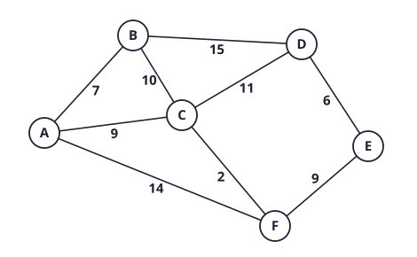
(a) Run Dijkstra from A. Give the order in which vertices are finalised and the final distance of each.
Answer
Finalised in this order, with distances: A=0, B=7, C=9, F=11, D=20, E=20.
| Step | Finalise | Updated distances |
|---|---|---|
| 1 | A (0) | B=7,\ C=9,\ F=14 |
| 2 | B (7) | D=22 (C via B is 17, not better than 9) |
| 3 | C (9) | D=20,\ F=11 |
| 4 | F (11) | E=20 |
| 5 | D (20) | none |
| 6 | E (20) | none |
D and E tie at 20. Either order is correct. The shortest-path tree uses edges AB, AC, CF, CD, FE with total weight 7+9+2+11+9=38.
(b) Run Prim from A. List the edges in the order added and the MST weight.
Answer
Add AB\,(7), AC\,(9), CF\,(2), FE\,(9), ED\,(6). Weight =33.
At each step Prim picks the cheapest edge leaving the tree: after \{A\} that is AB; after \{A,B\} it is AC (9 beats BC 10); after \{A,B,C\} it is CF (2); then FE (9, beating CD 11 and BD 15); then ED (6).
(c) The shortest-path tree from (a) and the MST from (b) are different trees. Which edges differ, and why must this be possible?
Answer
The shortest-path tree uses CD\,(11) where the MST uses ED\,(6). Weights 38 vs 33.
They answer different questions. Dijkstra minimises the distance from A to each vertex separately, so it reaches D through C (cost 20 total). Prim minimises the total weight of the tree, so it attaches D by its cheapest edge ED (6) even though the tree path from A to D (A\,C\,F\,E\,D) then costs 9+2+9+6=26, against the shortest distance 20. The shortest path to a vertex does not have to use MST edges.
(d) Edges of weight 9 appear twice (AC and EF). Is the MST still unique? Justify without running another algorithm.
Answer
Yes, unique. Use the cycle property on every edge outside the MST:
- AF\,(14) is the strict maximum of cycle A\,C\,F (9, 2, 14).
- BC\,(10) is the strict maximum of cycle A\,B\,C (7, 9, 10).
- BD\,(15) is the strict maximum of cycle B\,A\,C\,D (7, 9, 11, 15).
- CD\,(11) is the strict maximum of cycle C\,F\,E\,D (2, 9, 6, 11).
Every non-tree edge is excluded from every MST, so only this tree remains. Distinct weights are sufficient for uniqueness, not necessary.
(e) Take a directed graph with one negative edge. Give a 3-vertex example where Dijkstra from s returns a wrong distance, and say which step of the correctness argument breaks.
Answer
Edges s\to a\ (2), s\to b\ (3), b\to a\ (-2). Dijkstra finalises a with d=2 first (smaller than b’s 3). The true shortest path is s\,b\,a with cost 1.
The proof says that when u is extracted, any other route to u must leave the finished set through some vertex whose label is already at least d[u], so extra edges can only add cost. That uses non-negative weights; with b\to a=-2 the extra edge reduces cost.
Problem 4: union-find on one operation sequence
Ten elements 0,\dots,9, each in its
own set. Apply, in order: union(4,3),
union(3,8), union(6,5),
union(9,4), union(2,1),
union(8,9), union(5,0),
union(7,2), union(6,1),
union(1,0), union(6,7). Conventions from the
lecture: QuickFind union(p,q) rewrites every entry equal to
id[p] to id[q]; QuickUnion sets
id[root(p)] = root(q); weighted QuickUnion attaches the
smaller tree (by size) under the larger, and on a tie puts q’s root under p’s root; path compression is path halving
(id[p] = id[id[p]] on the way up).
(a) QuickFind: give id[] after the 11
operations, the number of connected components, and the cost of one
union and one find.
Answer
Final \text{id}=[1,1,1,8,8,1,1,1,8,8]. Two components: \{0,1,2,5,6,7\} (label 1) and \{3,4,8,9\} (label 8).
Step by step: after union(4,3) id =[0,1,2,3,3,5,\dots]; after
union(3,8) the entries 3 and 4 become 8;
union(6,5) gives \text{id}[6]=5; union(9,4) gives
\text{id}[9]=8; union(2,1)
gives \text{id}[2]=1;
union(8,9) does nothing (same label);
union(5,0) turns 5 and 6 into 0; union(7,2)
gives \text{id}[7]=1;
union(6,1) turns 0, 5, 6 into 1; the last two operations
find equal labels and do nothing.
Each union scans all N
entries: \Theta(N) (here 10 reads, 11
operations is 110 reads). find is one lookup: \Theta(1). Kruskal with QuickFind would cost
\Theta(|V|) per accepted edge, O(|V|^2) for the unions in total.
(b) QuickUnion: give id[] after the
first six operations, and the tallest tree after all 11. Then say what
input makes QuickUnion degenerate.
Answer
After six operations: \text{id}=[0,1,1,8,3,5,5,7,8,8] (parents: 2 under 1, 3 under 8, 4 under 3, 6 under 5, 9 under 8), height 2 (the chain 4\to3\to8).
After all 11: \text{id}=[1,1,1,8,3,0,5,1,8,8] with height 3 (the chain 6\to5\to0\to1).
Degenerate input: union(0,1), union(1,2),
…, union(8,9) builds one chain of height 9 (\text{id}=[1,2,3,\dots,9,9]), so a
find(0) costs N-1 steps.
N unions in this order cost \Theta(N^2) in total. (Reverse the arguments,
union(i+1,i), and the same sequence gives a star of height
1: the cost depends on the order, which is the
flaw.)
(c) Weighted QuickUnion: give id[]
after all 11 operations, draw the trees, state the height and say why it
can never exceed \lfloor\lg
N\rfloor.
Answer
Final \text{id}=[6,2,6,4,4,6,6,2,4,4].
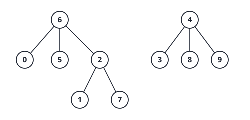
Two trees: root 6 (size 6) and root 4 (size 4). Height 2 (for example
1\to2\to6). The step that matters is
union(6,1): both trees have size 3, so by the tie rule
q’s root (2) goes under p’s root (6), which makes the height 2. Then
union(1,0) finds the same root 6, and
union(6,7) finds the same root 6, so both do nothing.
Bound: a node’s depth grows by 1 only when its tree is attached under
a tree at least as large, which at least doubles the
size of its tree. Sizes start at 1 and cannot exceed N, so the depth is at most \lg N (here \lfloor\lg10\rfloor=3, and the actual height
is 2). So find and union cost O(\log N).
(d) Weighted QuickUnion with path halving: give
id[] after the 11 operations, and say what changed against
(c) and which operations caused it.
Answer
Final \text{id}=[6,6,6,4,4,6,6,6,4,4], height 1. Two differences against (c):
union(1,0):find(1)walks 1\to2\to6 and halving sets \text{id}[1]=6.union(6,7):find(7)walks 7\to2\to6 and halving sets \text{id}[7]=6.
So the tree is now flat at the root 6; the structure of the sets is unchanged, only the paths are shorter. Cost per operation is O(\alpha(N)) amortised, \alpha the inverse Ackermann function (\le4 for any practical N).
(e) Link to Kruskal: a graph has |V|=10^5, |E|=5\cdot10^5 edges with integer weights in [1,100]. Give the total cost of Kruskal using counting sort for the edges and WQUPC for the sets, and compare with sorting by comparison and using QuickFind.
Answer
Counting sort + WQUPC: sorting costs O(|E|+W)=O(|E|) with W=100 keys. The edge loop makes at most 2|E| find calls and |V|-1 union calls, each O(\alpha(|V|)). Total O(|E|\,\alpha(|V|)+|V|), which is nearly
linear (about 10^6 steps).
Comparison sort + QuickFind: sorting costs \Theta(|E|\log|E|)\approx5\cdot10^5\cdot19\approx10^7. The finds are \Theta(1) each, but each of the |V|-1 accepted unions costs \Theta(|V|): about 10^5\cdot10^5=10^{10} steps in the worst case. The union step, not the sort, is what makes this version unusable.
Cross-topic: this is chapter 4 (counting sort, valid because weights are small integers), chapter 7 (union-find) and the Kruskal cost O(|E|\log|V|) of chapter 6 in one calculation.
Past-year questions
Questions from past papers (SC2001/CZ2101/CE2001). Every answer was worked out and checked by code; where a circulated official solution exists it was compared, and disagreements are flagged.
AY25/26 S2 1(f) Dijkstra’s algorithm. A. It works when some edges have negative weights. B. It works when some edges have zero weight. C. It works on a graph with cycles. D. It works on a directed graph. E. Running it once finds shortest paths between all pairs of vertices.
Answer
B, C and D. Zero weights are fine (weights only need to be non-negative). Cycles are fine (a vertex is finalised once). Directed graphs are fine. A is false (negative edges break it). E is false: one run gives shortest paths from one source; all pairs needs |V| runs (or Floyd-Warshall).

Edges: AB\,5, AC\,2, AF\,10, BC\,1, BD\,6, BE\,8, CD\,9, CE\,11, CF\,7, DE\,3, EF\,4.
AY25/26 S2 2(a) Prim’s algorithm starting from vertex A: after inserting A into the tree, what are the fringe vertices and their distances to the tree?
Answer
The fringe consists of the neighbours of A outside the tree: B with distance 5, C with distance 2, F with distance 10. (All other vertices are not adjacent to the tree yet.)
AY25/26 S2 2(b) Draw the MST found by Prim’s algorithm from A, i.e. list its edges.
Answer
Prim picks the closest fringe vertex each time: C via AC (2); then B via BC (1); then D via BD (6, cheaper than CD 9); then E via DE (3, cheaper than BE 8); then F via EF (4, cheaper than CF 7 and AF 10).
MST edges: AC,\ BC,\ BD,\ DE,\ EF. Weight 2+1+6+3+4=16.
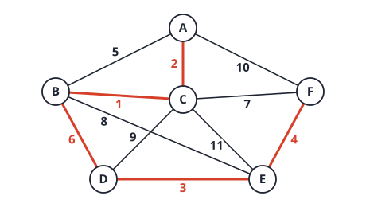
(The MST is unique: of all 5-edge spanning trees, only this one has weight 16.)
AY25/26 S2 2(c) Write the steps of Kruskal’s algorithm. For each step say which edge is considered and whether it is accepted or rejected. The algorithm stops as soon as the MST contains all vertices.
Answer
Sorted order: BC\,1, AC\,2, DE\,3, EF\,4, AB\,5, BD\,6, CF\,7, …
| Step | Edge | Weight | Result |
|---|---|---|---|
| 1 | BC | 1 | accept |
| 2 | AC | 2 | accept |
| 3 | DE | 3 | accept |
| 4 | EF | 4 | accept |
| 5 | AB | 5 | reject: A,B,C already connected (cycle) |
| 6 | BD | 6 | accept; the tree now has 5 edges and all 6 vertices, so stop |
Same edge set as Prim’s, total weight 16.
AY25/26 S2 2(d) Kruskal uses QuickFind to track
connectivity. When processing an accepted edge like BC, perform union(C,B) (the
endpoint with the larger alphabetical label is written first), merging
B’s component into C’s component. Initially each vertex is its
own component with ID equal to the vertex. After processing edge EF, what is the ID array?
Answer
Process only the accepted edges in Kruskal order, each as
union(larger, smaller) where every member of the smaller
endpoint’s component gets the larger endpoint’s component ID:
| Edge | Call | ID array [A,B,C,D,E,F] |
|---|---|---|
| start | [A,B,C,D,E,F] | |
| BC | union(C,B): B\to
C |
[A,C,C,D,E,F] |
| AC | union(C,A): A\to
C |
[C,C,C,D,E,F] |
| DE | union(E,D): D\to
E |
[C,C,C,E,E,F] |
| EF | union(F,E): E’s
component \{D,E\} takes F’s ID |
[C,C,C,F,F,F] |
After edge EF: \text{id}=[C,C,C,F,F,F]. QuickFind rewrites
the IDs of a whole component at each union, which is why
union costs \Theta(N). The
last union renamed both D and E. (The following edge AB would be rejected because \text{id}[A]=\text{id}[B].)
AY25/26 S1 1(d) Which statements about shortest paths are TRUE? A. The shortest path from u to v must always lie on the graph’s minimum spanning tree. B. Let G_1 be a subgraph of G and let u,v be vertices in both. The shortest path between u and v in G_1 is guaranteed to be longer than or equal to the shortest path between u and v in G. C. Dijkstra’s algorithm works with graphs with negative weights. D. Dijkstra’s algorithm is an exhaustive algorithm that explicitly checks every possible path.
Answer
B only.
- A false (tutorial 5/6 and Problem 1 of the greedy page: the shortest-path tree and the MST differ).
- B true: every path in G_1 is also a path in G, so G has at least as many candidate paths, and its minimum is no larger.
- C false: a negative edge breaks the “finished vertex is final” argument.
- D false: Dijkstra is greedy and never enumerates all paths.
AY25/26 S1 1(e) Which statements about the properties of a Minimum Spanning Tree are correct? A. Multiple MSTs are possible if all edge weights are equal. B. Multiple MSTs are possible if all edge weights are distinct. C. If an edge e has the smallest weight and is the only edge with this weight, then all MSTs contain e. D. It is possible to construct a graph with 3 nodes and 3 edges with 3 different MSTs.
Answer
A, C and D.
- A true: with all weights equal, any spanning tree is minimal (for any graph that is not itself a tree).
- B false: distinct weights give a unique MST.
- C true: it is the unique lightest edge across the cut that separates its endpoints, so the cut property forces it in every MST.
- D true: a triangle with equal weights has exactly 3 spanning trees (any 2 of the 3 edges), all minimal.

AY25/26 S1 2(a) Execute Kruskal’s algorithm on the graph in Figure Q2 and give the MST.
Answer
Sort the edges: AB\,1, BC\,2, DA\,3, DB\,4, EB\,5, FB\,6, FC\,7, DE\,8, EF\,9.
| Edge | Weight | Action |
|---|---|---|
| AB | 1 | add |
| BC | 2 | add |
| DA | 3 | add |
| DB | 4 | skip: D and B already connected (via A) |
| EB | 5 | add |
| FB | 6 | add |
| FC | 7 | skip: cycle |
| DE, EF | 8, 9 | skip |
The MST is \{AB,BC,DA,EB,FB\} with weight 1+2+3+5+6=17. It is unique: enumerating all 5-edge spanning trees finds exactly one of weight 17.
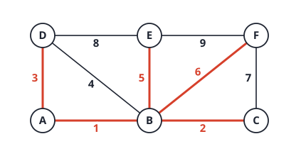
AY25/26 S1 2(b) Give the number of connected components in the union-find structure after every edge is added by Kruskal’s algorithm.
Answer
Start with 6 singletons. After each added edge: AB\to5, BC\to4, DA\to3, EB\to2, FB\to1. Skipped edges (DB, FC, DE, EF) leave the count unchanged.
AY25/26 S1 2(c) What trend do you notice in the answer to 2(b)?
Answer
The number of components falls by exactly 1 each time an edge is added, from 6 to 1, so the MST has 6-1=5 edges.
AY25/26 S1 2(d) Is this trend true when running Kruskal’s algorithm on any graph where an MST can be found? Justify.
Answer
Yes. An MST exists only for a connected graph.
Kruskal adds an edge only when its endpoints are in
different components (otherwise it would close a
cycle), and union merges exactly those two components. So
every added edge lowers the count by exactly 1, and rejected edges leave
it unchanged. The count starts at |V|
and must end at 1 (the result is connected), so exactly |V|-1 edges are added. (For a disconnected
graph the same rule holds, but the process ends at the number of
connected components instead of 1, and the result is a minimum spanning
forest.)
AY24/25 S2 2(a) A weighted directed graph (Figure Q2a) has edges A\to C (2), B\to A (2), B\to C (3), C\to D (4), C\to E (3), D\to B (2), E\to D (2). Apply Dijkstra’s algorithm from vertex A to find the shortest distances to the other vertices. Show the contents of the arrays S, d and \pi iteration by iteration.

Answer
Order of the arrays: A,B,C,D,E. S marks finished vertices.
| Iteration | extract | S | d (A,B,C,D,E) | \pi (A,B,C,D,E) |
|---|---|---|---|---|
| start | none | 0, ∞, ∞, ∞, ∞ | null for all | |
| 1 | A | A | 0, ∞, 2, ∞, ∞ | null, null, A, null, null |
| 2 | C (2) | A, C | 0, ∞, 2, 6, 5 | null, null, A, C, C |
| 3 | E (5) | A, C, E | 0, ∞, 2, 6, 5 | no change (5+2=7>6) |
| 4 | D (6) | A, C, D, E | 0, 8, 2, 6, 5 | null, D, A, C, C |
| 5 | B (8) | all | 0, 8, 2, 6, 5 | no change |
Shortest distances: B=8, C=2, D=6, E=5. Paths: A\to C\to D\to B for B, A\to C\to D for D, A\to C\to E for E.
Link. The graph has a cycle B\to C\to D\to B of length 9. Dijkstra copes because all weights are positive. The vertices leave the queue in non-decreasing order of d (0, 2, 5, 6, 8), the “frozen” property the correctness proof uses. Compare 2(c) and the 2425 S1 paper (negative edges).
AY24/25 S2 2(b) Consider the Weighted QuickUnion algorithm from the lectures to implement Union-Find. Initially there are 6 isolated objects A,B,C,D,E,F. Show the tree(s) after sequentially executing union(A,B), union(A,C), union(C,D), union(E,F), union(A,F). Only the final state is needed.
Answer
Convention (lecture): attach the smaller tree’s root under the larger; on a size tie, the root of q goes under the root of p.
| Operation | roots | sizes | action |
|---|---|---|---|
| union(A,B) | A, B | 1, 1 | tie: B under A, sz[A]=2 |
| union(A,C) | A, C | 2, 1 | C under A, sz[A]=3 |
| union(C,D) | A, D | 3, 1 | D under A, sz[A]=4 |
| union(E,F) | E, F | 1, 1 | tie: F under E, sz[E]=2 |
| union(A,F) | A, E | 4, 2 | E under A, sz[A]=6 |
Final: one tree. A is the root with children B,C,D,E, and F is the child of E. Height 2.
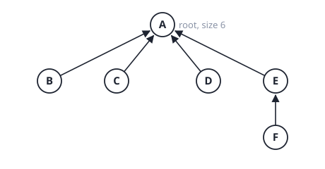
id=[A,A,A,A,A,E] for (A,B,C,D,E,F). If your tie rule were the reverse (root of p under root of q) the root would be B and the answer differs, so state your convention.
Link. Weighted union keeps the height at most \lg n: a node moves one level down only when its tree is at most as big as the one it joins, so its tree size at least doubles each time. Here \lg 6\approx2.6 and the height is 2.
AY24/25 S2 2(c) Given two weighted undirected connected graphs G and G' with disjoint vertex sets. Pick vertices x,p from G and y,q from G' and add two crossing edges, (x,y) with weight 1 and (p,q) with weight 2, forming H=G\cup G'\cup\{(x,y),(p,q)\} (Figure Q2c). Prove that edge (x,y) must be in the minimum spanning tree of H found by Kruskal’s algorithm.

Answer
Kruskal accepts an edge exactly when its endpoints are in different components of the edges accepted so far.
- The only edges between G and G' are (x,y) and (p,q). Every other edge has both ends in G or both in G'.
- Kruskal processes edges by weight. (x,y) has weight 1 and (p,q) has weight 2, so (p,q) comes strictly later. When (x,y) is examined, no crossing edge has been accepted yet.
- Without a crossing edge, every component so far lies inside G or inside G'. So x\in G and y\in G' are in different components.
- Therefore Kruskal accepts (x,y). Accepted edges are never removed, so (x,y) is in the final tree. \blacksquare
The strict inequality 1<2 is what matters. Edges inside G or G' with weight below 1 do not change the argument.
Link. This is the cut property: (x,y) is the unique lightest edge across the cut (V(G),V(G')), so it is in every MST (not only the one Kruskal finds). Prim from any vertex reaches the same conclusion. It is the same reasoning as Tutorial 5 Q3 (distinct weights give a unique MST).
AY24/25 S1 1(e) Which statements about Dijkstra’s algorithm are TRUE? A. Using Dijkstra’s algorithm we can find the shortest paths between ALL pairs of vertices in a graph. B. Dijkstra’s algorithm is suitable for graphs with negative edge weights. C. We can use the inverse weight trick “1/weight” to use Dijkstra’s algorithm to find the longest path for a pair of nodes. D. If we do not allow cycles in the shortest paths in graphs with negative weights, we can apply Dijkstra’s algorithm. E. None of the above.
Answer
E (none).
- A false: one run gives shortest paths from one source. All pairs needs |V| runs (or Floyd-Warshall).
- B false: a negative edge breaks the argument that a finished vertex is final.
- C false: 1/w does not turn a sum of weights into a sum of inverses. The longest simple path problem is NP-hard, so no such trick exists.
- D false: the failure is caused by a single negative edge, with or without cycles (example: the edges s\to a of weight 2, s\to b of weight 3 and b\to a of weight -2 have no cycle, yet Dijkstra finalises a at 2 while the true distance is 1).
AY24/25 S1 1(f) Which statement about the properties of a Minimum Spanning Tree (MST) is correct? A. The MST of a graph is unique if all the edge weights are distinct. B. An MST contains all the vertices and all the edges of the original graph. C. The sum of the weights of the edges in an MST is always larger than in any other spanning tree. D. The MST of a graph can include cycles if all vertices are included. E. If a graph has negative edge weights, it does not have an MST.
Answer
A only.
- A true (the cut property picks a unique lightest edge for every cut).
- B false: it has |V|-1 edges, not all of them. C false: it is the smallest sum. D false: a tree has no cycles.
- E false: MST only compares weights, so negative weights are fine (see 2(c)).
AY24/25 S1 Q2 The adjacency matrix representation of an undirected graph is in Figure Q2, in which the element in (row, column) denotes the edge weight. For example, there is an edge between node A and node B, denoted by (A,B) with a weight of 2; and there is no edge between node A and node E, denoted by (A,E) with a weight of \infty.

AY24/25 S1 2(a) Link the vertices of the Minimum Spanning Tree (MST) found by Prim’s algorithm. G is the starting vertex.
Answer
Edges read from the matrix: AB\,2, AG\,3, BC\,4, BG\,{-2}, CE\,2, DE\,2, DG\,1, EG\,{-4}.
| Step | Add | Fringe distances after adding (A, B, C, D, E) |
|---|---|---|
| start | G | A 3, B -2, D 1, E -4 |
| 1 | E via GE (-4) | A 3, B -2, C 2, D 1 |
| 2 | B via GB (-2) | A 2 (via B), C 2, D 1 |
| 3 | D via GD (1) | A 2, C 2 |
| 4 | A via AB (2) | C 2 |
| 5 | C via CE (2) |
MST edges: GE,\ GB,\ GD,\ BA,\ EC. Weight -4-2+1+2+2=-1. (Steps 4 and 5 are tied at 2; either order gives the same tree.)
AY24/25 S1 2(b) Link the vertices of the MST found by Kruskal’s algorithm.
Answer
Sorted: EG\,{-4}, BG\,{-2}, DG\,1, then the three weight-2 edges AB, CE, DE (any order), AG\,3, BC\,4.
| Edge | Weight | Result |
|---|---|---|
| EG | -4 | accept |
| BG | -2 | accept |
| DG | 1 | accept |
| AB | 2 | accept |
| CE | 2 | accept |
| DE | 2 | reject: D and E are both already connected through G |
| AG, BC | 3, 4 | reject |
MST =\{EG,BG,DG,AB,CE\}, the same as Prim’s, weight -1. Enumerating all 5-edge spanning trees finds exactly one of weight -1, so this MST is unique.
AY24/25 S1 2(c) Different from Dijkstra’s algorithm, which requires non-negative edge weights, both Prim’s and Kruskal’s can find the MST of a graph with negative weights. Is this statement true? Justify.
Answer
True. Both algorithms only compare weights, and the two properties they rely on (the cut property for Prim and Kruskal, the cycle property for rejecting edges) hold for any real weights. Another view: adding a constant c to every edge changes the weight of every spanning tree by exactly (|V|-1)c, so the best tree stays the same. Make all weights positive by adding c and the problem is the usual one. Dijkstra differs because the number of edges on a path is not fixed, so adding a constant changes which path is shortest. Part (a) and (b) above are examples with weights -4, -2.
AY24/25 S1 2(d) If your MSTs from 2(a) and 2(b) are different, it is normal in general. Justify why the resulting MSTs could be different.
Answer
When several edges share a weight, the MST is not unique, and the algorithms break ties differently. Kruskal depends on the order in which equal edges appear after sorting. Prim depends on which fringe vertex is chosen when two have the same distance. Both outputs are valid and have the same total weight. With all weights distinct the MST is unique, so the two algorithms must agree.
In this graph the three weight-2 edges AB, CE, DE do tie, but DE always closes a cycle with DG and GE, so every run gives the same tree and the two MSTs from (a) and (b) are identical here.
AY23/24 S2 2(a) Consider a weighted directed graph represented by the adjacency matrix in Figure Q2a. (i) Draw the weighted directed graph. (ii) Table Q2a shows the result of applying Dijkstra’s algorithm on the graph that you constructed in Q2(a)(i) after two iterations. Complete the process and show the final table. (iii) What is the shortest distance from the starting vertex to vertex E?


Answer
(i) Rows are sources and columns destinations; 0 on the diagonal and \infty mean “no edge”. The edges are A\to B (2), A\to C (4), B\to C (1), B\to D (5), B\to E (1), C\to B (2), C\to E (7), D\to E (2), E\to D (3).
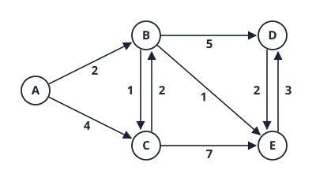
(ii) The table after two iterations has S=\{A,B\}, d=(0,2,3,7,3), \pi=(\text{nil},A,B,B,B). It is consistent with the graph: iteration 1 extracts A (setting d_B=2, d_C=4) and iteration 2 extracts B (improving C to 2+1=3 and setting D=2+5=7, E=2+1=3). Continue (order A,B,C,D,E):
| Iteration | extract | S | d | \pi |
|---|---|---|---|---|
| 2 (given) | B | A, B | 0, 2, 3, 7, 3 | nil, A, B, B, B |
| 3 | C (3) | A, B, C | 0, 2, 3, 7, 3 | no change (C\to B is already final, and 3+7=10>3) |
| 4 | E (3) | A, B, C, E | 0, 2, 3, 6, 3 | nil, A, B, E, B (E\to D: 3+3=6<7) |
| 5 | D (6) | all | 0, 2, 3, 6, 3 | no change (D\to E: 6+2=8>3) |
(C and E are tied at 3; taking E first gives the same final table.) Final table: S=(1,1,1,1,1), d=(0,2,3,6,3), \pi=(\text{nil},A,B,E,B).
(iii) The shortest distance from A to E is 3, along A\to B\to E.
Link. The only change in the last two iterations is D: the first estimate (7, via B) was beaten by 6 (via E), which was not known until E was extracted. That is why a distance is “tentative” until its vertex leaves the queue. The extraction order has non-decreasing distances (0, 2, 3, 3, 6), the property that makes Dijkstra correct with non-negative weights. The antiparallel pairs B\leftrightarrow C and D\leftrightarrow E have different weights, so the graph is genuinely directed.
AY23/24 S2 2(b) Consider a weighted undirected graph G with the following information: G has five vertices A,B,C,D,E; G has seven edges with weights 2,3,5,8,13,21,34; G has its minimal spanning tree T with weight 26; the distance from A to C in the minimal spanning tree T is 10; the distance from B to D in T is 5. Construct the graph G and its minimal spanning tree T.
Answer
Which weights are in T. T has 5-1=4 edges. The only four of the seven weights that sum to 26 are \{2,3,8,13\} (checked by listing all 35 subsets). So the other three edges, with weights 5, 21 and 34, are not in T.
Paths. In T, d(A,C)=10 and the only way to get 10 from \{2,3,8,13\} is 2+8, so the A-C path is two edges of weights 2 and 8. Similarly d(B,D)=5=2+3 is the only way, so the B-D path has edges 2 and 3. Both paths use the edge of weight 2, so they overlap on it. Take this edge to be A-B:
- A-C path: A-B (2) and B-C (8), total 10;
- B-D path: B-A (2) and A-D (3), total 5.
So T has the edges AB=2, BC=8, AD=3. The fourth tree edge, weight 13, must reach the last vertex E; attach it as A-E.
The three extra edges. An edge not in T must be heavier than every edge on the tree path between its endpoints (cycle property), or T would not be the MST. The weight-5 edge needs a path with maximum at most 3, which only B-D has (path B,A,D with weights 2, 3), so BD=5. Weights 21 and 34 exceed every tree weight, so they may go on any two remaining pairs; take AC=21 and BE=34.
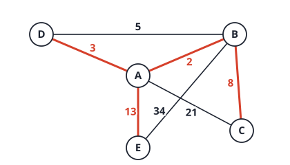
Check: G has edges AB\,2, AD\,3, BD\,5, BC\,8, AE\,13, AC\,21, BE\,34 (all seven weights). Kruskal accepts 2, 3, then rejects 5 (cycle B,A,D), accepts 8 and 13, and rejects 21 and 34. T has weight 26, d_T(A,C)=10 and d_T(B,D)=5 (checked by code).
The answer is not unique. The edge of weight 2 may be placed elsewhere, 13 may join E to any other vertex, and 21 and 34 may sit on any free pairs. A code search over all labelled graphs found 16 different trees that satisfy every condition. State any one with its check.
Link. This is the cycle property run backwards: the non-tree edges are exactly those that are the heaviest on a cycle. Notice also that the MST depends only on the order of the weights, not their values; replacing 21 and 34 by 100 and 200 would change nothing (see the links page, Problem 1).
AY23/24 S2 2(c) Consider Prim’s algorithm taught in the lecture. Apply it on the graph shown in Figure Q2d to obtain the minimal spanning tree. The algorithm initializes the table as shown in Table Q2c. Complete the process and show the final table.


Answer
Edges: AB\,2, BC\,8, AD\,6, AE\,7, BD\,12, BE\,5, BF\,15, CE\,9, CF\,13, DE\,4, EF\,11. Start at B (d_B=0). At each step extract the unfinished vertex with the smallest d, then for each unfinished neighbour v set d_v=w(u,v) and \pi_v=u if w(u,v)<d_v. Order A,B,C,D,E,F:
| step | extract | d (A..F) | \pi (A..F) |
|---|---|---|---|
| 1 | B (0) | 2, 0, 8, 12, 5, 15 | B, nil, B, B, B, B |
| 2 | A (2) | 2, 0, 8, 6, 5, 15 | B, nil, B, A, B, B |
| 3 | E (5) | 2, 0, 8, 4, 5, 11 | B, nil, B, E, B, E |
| 4 | D (4) | no change | |
| 5 | C (8) | no change (CF=13>11) | |
| 6 | F (11) | no change |
Final table: S=(1,1,1,1,1,1), d=(2,0,8,4,5,11), \pi=(B,\text{nil},B,E,B,E). The tree edges are AB\,2, BE\,5, DE\,4, BC\,8, EF\,11, total weight 30 (the sum of the d values).
Link. Step 3 shows what is special about Prim’s relaxation: d_D drops from 6 to 4 because the edge ED=4 is lighter than the old edge AD=6, whatever the distance from the root. Dijkstra would compare path lengths instead and could never improve D this way.
AY23/24 S2 2(d) Apply Kruskal’s algorithm on the graph shown in Figure Q2d to obtain the minimal spanning tree. Draw the minimal spanning tree (no need to show the process).
Answer
Sort the edges and accept each that joins two different components:
| edge | weight | decision |
|---|---|---|
| AB | 2 | accept |
| DE | 4 | accept |
| BE | 5 | accept (joins \{A,B\} and \{D,E\}) |
| AD | 6 | reject (A and D already connected) |
| AE | 7 | reject |
| BC | 8 | accept |
| CE | 9 | reject |
| EF | 11 | accept |
Five edges are accepted for six vertices, so the algorithm stops (the remaining edges BD\,12, CF\,13, BF\,15 would all be rejected). The MST, total weight 30, is drawn below in red.
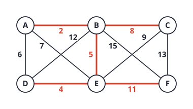
Link. Kruskal and Prim give the same tree because all eleven weights are distinct, and distinct weights force a unique MST (Tutorial 5 Q3). Kruskal chose edges in the order 2, 4, 5, 8, 11; Prim from B in the order 2, 5, 4, 8, 11. The order differs but the set is identical.
AY23/24 S1 1(a)(iii) True or False? When there are negative weights in a graph, we can still use Dijkstra’s to find the shortest path by adding an offset equal to the absolute value of the smallest weight to all the edge weights, effectively ensuring that all weights become non-negative.
Answer
False. Adding the offset c to every edge adds c\times(\text{number of edges}) to a path, so a path with more edges is penalised more, and the shortest path can change.
Counterexample (directed): s\to a with weight -2, a\to t with -2, and s\to t with -3. The true shortest path s\to t goes through a and has length -4. The smallest weight is -3, so the offset is +3 and the weights become 1,1,0. Now the path through a costs 2 and the direct edge costs 0, so Dijkstra returns the direct edge, which is wrong for the original graph (checked by code).
(In an undirected graph a single negative edge already makes a negative cycle, since you can walk back and forth along it, so shortest paths are not defined. The question therefore means a directed graph.)
Link. Compare the MST: adding the same offset to all weights does not change the MST. Every spanning tree has exactly n-1 edges, so every tree shifts by the same amount, and the sorted order of the edges is unchanged. Shortest paths have different numbers of edges, so the shift is not uniform. The links page (Problem 1) tests this on 2000 random graphs.
AY23/24 S1 1(a)(iv) True or False? When there are negative weights in a graph, Prim’s algorithm is not applicable to find a Minimum Spanning Tree.
Answer
False. Prim’s correctness rests on the cut property: the lightest edge across a cut belongs to some MST. That compares weights; it never adds them, so it holds for negative weights too. Prim’s algorithm differs from Dijkstra’s only in the relaxation: Prim stores d[v]=w(u,v), Dijkstra stores d[v]=d[u]+w(u,v). The “+d[u]” is what makes negative weights harmful for Dijkstra (a vertex stops being final once a negative edge can lower its distance later), and Prim has no such term.
Link. The same reason makes Kruskal work with negative weights: it only sorts the edges. See (v) below.
AY23/24 S1 1(a)(v) True or False? We can use Kruskal’s algorithm to find a Maximum Spanning Tree. 2(b) Justify your answer to Q1(a)(v).
Answer
True. Sort the edges in descending order of weight and run the same loop: add an edge if it joins two different components.
Justification.
- Replace every weight w by -w. A spanning tree always has exactly n-1 edges, so the weight of a tree under -w is -w(T). Hence a minimum spanning tree for -w is exactly a maximum spanning tree for w.
- Kruskal on -w takes the edges in increasing order of -w, which is decreasing order of w. Kruskal is correct for any real weights, negative included, because its proof uses only the cut property, which compares weights.
- Direct version of the cut property for maximum trees: let e be the heaviest edge crossing a cut and let T be a maximum spanning tree not containing e. Adding e to T creates a cycle, and that cycle crosses the cut again at another edge f with w(f)\le w(e). Then T+e-f is a spanning tree with weight at least w(T), so some maximum tree contains e. When Kruskal (descending) reaches an edge joining two components, that edge is the heaviest one leaving the first component, so it is safe.
Checked by brute force on 300 random graphs with weights from -9 to 9: descending Kruskal always matched the best spanning tree found by trying all trees.
Link. “Kruskal, Prim and the MST do not care about the sign or the scale of the weights, only their order.” That is why negative weights (iv), an offset, squaring the weights, or going from minimum to maximum all leave the algorithms valid. Dijkstra does care, because it adds weights.
AY22/23 S2 2(a) Consider a weighted directed graph represented by the adjacency matrix in Figure Q2a. (i) Draw the weighted directed graph. (ii) Table Q2a shows the result of applying Dijkstra’s algorithm on the graph you constructed in Q2(a)(i) after two iterations. Which vertex is the starting point? (iii) Complete the application of Dijkstra’s algorithm on Q2(a)(ii) and show the final table.


Answer
(i) Row = source, column = destination. Edges: A\to B (1), A\to C (8), B\to C (4), B\to D (5), B\to E (1), C\to E (5), D\to E (3), E\to C (1), E\to D (2). The diagonal 0s are not edges. C\leftrightarrow E and D\leftrightarrow E are pairs of opposite arrows with different weights.
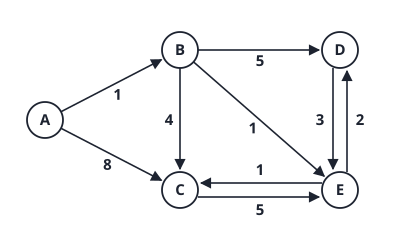
(ii) The starting point is A. In Table Q2a it is the vertex with d=0 and \pi=\text{nil}, and it is the first one finished. Check against the graph: iteration 1 extracts A (setting d_B=1, d_C=8); iteration 2 extracts B (giving d_C=1+4=5, d_D=1+5=6, d_E=1+1=2). That reproduces the table: S=(1,1,0,0,0), d=(0,1,5,6,2), \pi=(\text{nil},A,B,B,B).
(iii) Continue (order A,B,C,D,E):
| Iteration | extract | S | d | \pi |
|---|---|---|---|---|
| 2 (given) | B | A, B | 0, 1, 5, 6, 2 | nil, A, B, B, B |
| 3 | E (2) | A, B, E | 0, 1, 3, 4, 2 | nil, A, E, E, B |
| 4 | C (3) | A, B, C, E | 0, 1, 3, 4, 2 | no change (C\to E: 3+5=8>2) |
| 5 | D (4) | all | 0, 1, 3, 4, 2 | no change (D\to E: 4+3=7>2) |
The next vertex is E (d=2, the smallest unfinished), not C. Edge E\to C gives 2+1=3<5 and edge E\to D gives 2+2=4<6. Final table: S=(1,1,1,1,1), d=(0,1,3,4,2), \pi=(\text{nil},A,E,E,B).
Link. Both C and D were first reached through B and then improved through E, which was only discovered to be close (d=2) after B was extracted. That is why the order of extraction matters, and why the “direct” estimate for C (8, then 5) turned out to be far from the shortest distance (3). The paths are A\to B\to E\to C (3) and A\to B\to E\to D (4).
AY22/23 S2 2(b) Consider a weighted undirected graph G with the following information: G has five vertices A,B,C,D,E; G has seven edges with weights 1,2,5,9,17,21,29; G has its minimal spanning tree T with weight 37; the distance from B to D in T is 7; the distance from B to C in T is 29. Construct the graph G and its minimal spanning tree T.
Answer
T has 4 edges, with total weight 37.
Which weights are in T. The only four of the seven weights that sum to 37 are \{1,2,5,29\} (checked over all 35 subsets). The other three edges (9, 17, 21) are not in T.
Use the distances. d_T(B,C)=29: the only way is the single edge of weight 29, so B and C are joined directly by the weight-29 edge. d_T(B,D)=7 can only be 5+2, so the B-D path has two edges of weights 5 and 2: B-A-D with BA=5 and AD=2 (the middle vertex can be any other vertex; take A). The remaining tree edge, weight 1, joins the last vertex E to the tree; take AE=1.
So T: AB=5, AD=2, AE=1, BC=29.
Add the three non-tree edges with weights 9, 17, 21. Each must be heavier than everything on its tree path; all three exceed the tree weights on these paths (the largest tree weight on any path among A,B,D,E is 5), so any assignment works on the pairs BD, BE, DE. Take BD=9, BE=17, DE=21.
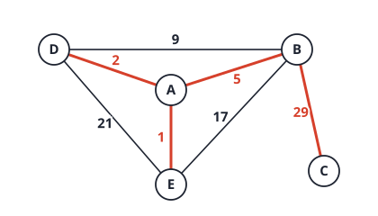
Check (Kruskal): accept 1 (AE), 2 (AD), 5 (AB); reject 9, 17 and 21 (each closes a cycle through A); accept 29 (BC). T has weight 37, d_T(B,D)=5+2=7 and d_T(B,C)=29 (checked by code, which found 72 labelled solutions, all with the same tree weights \{1,2,5,29\}).
Link. C is a leaf of T, joined only by the weight-29 edge. By the cut property (the cut \{C\} against the rest), the lightest edge at C is in every MST. So any other edge at C would have to weigh more than 29, but the three spare weights 9, 17 and 21 are all lighter. In this graph C therefore cannot have any other edge, which is why the three extra edges had to go among A,B,D,E.
AY22/23 S2 2(c) Apply Prim’s algorithm on the graph G that you constructed in Q2(b), based on Table Q2c. Show the final table.

Answer
Table Q2c has no starting vertex marked, so choose A (any start gives the same tree). Set d_A=0. At each step extract the unfinished vertex with the smallest d, then for each unfinished neighbour v set d_v=w(u,v), \pi_v=u if that is smaller. Using G from 2(b): AB=5, AD=2, AE=1, BC=29, BD=9, BE=17, DE=21. Order A,B,C,D,E:
| step | extract | d | \pi |
|---|---|---|---|
| 1 | A (0) | 0, 5, ∞, 2, 1 | nil, A, nil, A, A |
| 2 | E (1) | no change (EB=17>5, ED=21>2) | |
| 3 | D (2) | no change (DB=9>5) | |
| 4 | B (5) | 0, 5, 29, 2, 1 | nil, A, B, A, A |
| 5 | C (29) | no change |
Final table: S=(1,1,1,1,1), d=(0,5,29,2,1), \pi=(\text{nil},A,B,A,A). The tree edges are AB (5), BC (29), AD (2), AE (1), total weight 37 (the sum of d), the same as the tree built in 2(b).
Link. C has only one edge, so d_C stays \infty until B is extracted. Prim extracts vertices in the order A,E,D,B,C, which is the order of the cheapest connection to the tree (1, 2, 5, 29), not the order of any distance from A (Dijkstra would extract B at distance 5 as well, but C at distance 34).
AY22/23 S2 2(d) Apply Kruskal’s algorithm on the graph shown in Figure Q2d to obtain the minimal spanning tree. Draw the minimal spanning tree (no need to show the process).

Answer
Edges: AB\,2, AD\,1, AE\,7, BE\,3, BF\,8, CE\,11, CF\,13, DE\,5, EF\,9.
| edge | weight | decision |
|---|---|---|
| AD | 1 | accept |
| AB | 2 | accept |
| BE | 3 | accept |
| DE | 5 | reject (cycle D,A,B,E) |
| AE | 7 | reject (cycle A,B,E) |
| BF | 8 | accept |
| EF | 9 | reject (cycle B,E,F) |
| CE | 11 | accept |
| CF | 13 | reject |
Five edges for six vertices: stop. MST: AD,AB,BE,BF,CE, total weight 1+2+3+8+11=25.
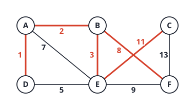
Link. The figure shows two crossing edges (BF=8 and CE=11). Both are in the tree, so a minimum spanning tree can use crossing edges: planarity plays no role. The accepted weights 1, 2, 3, 8, 11 are the five smallest non-cycle-forming weights; the weights 5, 7, 9 were rejected although they are smaller than 11, because their ends were already connected by lighter edges.
AY22/23 S1 2(a) Consider a weighted directed graph represented by the adjacency matrix in Figure Q2a. (i) Draw the weighted directed graph. (ii) Apply Dijkstra’s algorithm on the graph that you constructed in Q2(a)(i) to find the shortest distances from vertex A to the other vertices. Show the contents of arrays S, d and \pi iteration by iteration.

Answer
(i) Row = source, column = destination. The edges are A\to B (1), A\to C (5), B\to C (2), B\to D (6), C\to D (1), C\to E (3), D\to E (2), E\to D (1). The 0 on the diagonal means distance 0 from a vertex to itself; it is not a real edge (the circulated solution draws it as a weight-0 self-loop, which never changes a shortest path).
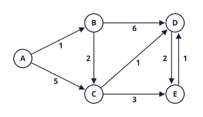
(ii) Order A,B,C,D,E. S marks finished vertices.
| Iteration | extract | S | d | \pi |
|---|---|---|---|---|
| start | 0 0 0 0 0 | 0, ∞, ∞, ∞, ∞ | null for all | |
| 1 | A (0) | A | 0, 1, 5, ∞, ∞ | null, A, A, null, null |
| 2 | B (1) | A, B | 0, 1, 3, 7, ∞ | null, A, B, B, null |
| 3 | C (3) | A, B, C | 0, 1, 3, 4, 6 | null, A, B, C, C |
| 4 | D (4) | A, B, C, D | 0, 1, 3, 4, 6 | no change (4+2=6 is not less than 6) |
| 5 | E (6) | all | 0, 1, 3, 4, 6 | no change (6+1=7>4) |
Shortest distances from A: B=1, C=3, D=4, E=6. Paths: A\to B, A\to B\to C, A\to B\to C\to D, A\to B\to C\to E.
Link. E has two shortest paths of length 6: A\to B\to C\to E and A\to B\to C\to D\to E. The update uses a strict “<”, so \pi_E keeps the first one found (C). In iteration 2, C dropped from 5 (direct edge) to 3 (via B): the direct edge is not the shortest path, so a distance stays “tentative” until the vertex is extracted.
AY22/23 S1 2(b) Briefly explain the Minimum Spanning Tree (MST) property.
Answer
MST (cycle) property. Let T be a spanning tree of a connected weighted graph G. T is a minimum spanning tree if and only if, for every edge e of G that is not in T, adding e to T creates a cycle in which e is a maximum-weight edge (no edge on that cycle is heavier than e).
Why it holds: if some non-tree edge e were lighter than an edge f on its cycle, then T+e-f is a spanning tree of smaller weight, so T would not be minimum. Conversely, if no such swap exists, no single exchange helps, and (by the exchange argument) T is minimum.
The equivalent cut property: for any cut of the vertices, a lightest edge crossing the cut belongs to some MST. Kruskal’s and Prim’s algorithms are built on it.
Link. This is the property used to construct graphs from MST data in 2(c): every non-tree edge must be heavier than everything on its tree path. With distinct weights the MST is unique (Tutorial 5 Q3), and it depends only on the order of the weights, not their values.
AY22/23 S1 2(c) Consider a weighted undirected graph G with the following information: G has six vertices A,B,C,D,E,F; G has eight edges with weights 1,2,3,5,7,9,11,13; G has its minimal spanning tree T with weight 28; the distance from B to D in the minimal spanning tree T is 3; the distance from B to C in T is 25. Construct the graph G and its minimal spanning tree T.
Answer
T has 6-1=5 edges, and the other 3 edges are non-tree edges.
Step 1: which weights are in T. Five of the eight weights must sum to 28. The possible sets are \{1,2,5,9,11\}, \{1,2,5,7,13\} and \{1,2,3,9,13\} (found by listing the 56 subsets; code).
Step 2: use the distances. Take \{1,2,5,9,11\}. d_T(B,D)=3 can only be 1+2 (two edges), so the B-D path has the edges 1 and 2: B-A-D with BA=1 and AD=2. d_T(B,C)=25=5+9+11 uses the three edges of weights 5, 9, 11: from B the path B-E-F-C with BE=5, EF=9, FC=11. That gives the five tree edges: AB=1, AD=2, BE=5, EF=9, CF=11 (sum 28).
Step 3: add the three non-tree edges with the remaining weights 3, 7, 13. By the MST property each must be heavier than every tree edge on its cycle:
- weight 3 on B-D: tree path B,A,D has weights 1, 2, so 3>2 is fine;
- weight 7 on D-E: tree path D,A,B,E has weights 2, 1, 5, so 7>5 is fine;
- weight 13 on B-C: tree path B,E,F,C has weights 5, 9, 11, so 13>11 is fine.
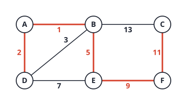
Check (Kruskal): accept 1 (AB), 2 (AD), reject 3 (cycle B,A,D), accept 5 (BE), reject 7 (cycle D,A,B,E), accept 9 (EF), accept 11 (CF), reject 13. MST weight 1+2+5+9+11=28; d_T(B,D)=3 and d_T(B,C)=25 (checked by code). This is also the answer printed in the circulated solution.
The answer is not unique: the other two weight sets also work, and a search found 4152 labelled graphs in total.
Link. Building a graph from its MST is the MST property used backwards: the tree is chosen first, and each extra edge only has to beat the maximum on its cycle. Notice how little freedom the tree weights had: the two distance conditions fixed which edges lie on which paths.
AY22/23 S1 2(d) Apply Kruskal’s algorithm on the graph shown in Figure Q2d to obtain the minimal spanning tree. Draw the minimal spanning tree (no need to show the process).

Answer
Edges: AB\,2, AD\,1, BD\,3, BE\,5, BF\,9, DE\,8, EF\,7, CF\,13. Sorted order and decisions:
| edge | weight | decision |
|---|---|---|
| AD | 1 | accept |
| AB | 2 | accept |
| BD | 3 | reject (cycle A,B,D) |
| BE | 5 | accept |
| EF | 7 | accept |
| DE | 8 | reject (cycle D,A,B,E) |
| BF | 9 | reject (cycle B,E,F) |
| CF | 13 | accept |
Five edges for six vertices: stop. MST: AD,AB,BE,EF,CF, total weight 1+2+5+7+13=28.
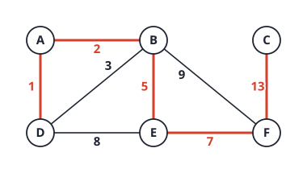
Link. Each rejected edge is the heaviest edge on the cycle it would close, which is the property of 2(b): BD=3 would close A,B,D (other edges 1 and 2), DE=8 would close D,A,B,E (1, 2, 5) and BF=9 would close B,E,F (5, 7).
AY21/22 S2 2(a) A weighted undirected graph H is represented by the following array of adjacency lists: A: (C,8) (B,4); B: (D,8) (C,9) (A,4) (E,10); C: (D,2) (B,9) (F,1) (A,8); D: (E,7) (B,8) (C,2) (F,9); E: (B,10) (F,5) (D,7) (G,6); F: (G,2) (E,5) (D,9) (C,1); G: (E,6) (F,2). Use Prim’s algorithm to find a minimum spanning tree (MST) for H, starting from vertex A. Use the reverse alphabetical order to break a tie in choosing the next vertex. Draw the MST obtained.
Answer
Edges (each appears in both lists, which was checked): AB\,4, AC\,8, BC\,9, BD\,8, BE\,10, CD\,2, CF\,1, DE\,7, DF\,9, EF\,5, EG\,6, FG\,2. d[v] is the cheapest edge from the tree to v and \pi[v] its tree end. Reverse alphabetical order means: when two fringe vertices have the same smallest d, take the one later in the alphabet.
| step | extract | d (A,B,C,D,E,F,G) | \pi (A..G) |
|---|---|---|---|
| 1 | A (0) | 0, 4, 8, ∞, ∞, ∞, ∞ | -, A, A, -, -, -, - |
| 2 | B (4) | 0, 4, 8, 8, 10, ∞, ∞ | -, A, A, B, B, -, - |
| 3 | D (tie: C=D=8, take the later letter D) | 0, 4, 2, 8, 7, 9, ∞ | -, A, D, B, D, D, - |
| 4 | C (2) | 0, 4, 2, 8, 7, 1, ∞ | -, A, D, B, D, C, - |
| 5 | F (1) | 0, 4, 2, 8, 5, 1, 2 | -, A, D, B, F, C, F |
| 6 | G (2) | no change | |
| 7 | E (5) | no change |
Order of extraction: A,B,D,C,F,G,E. MST edges: AB\,4, BD\,8, DC\,2, CF\,1, FG\,2, FE\,5; total weight 22.
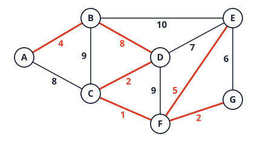
The tie matters. At step 3 the candidates C (edge AC\,8) and D (edge BD\,8) both cost 8. Reverse alphabetical takes D, so the tree contains BD. With the forward alphabetical rule Prim would take C and the tree would contain AC instead (also weight 22, found by code), so the drawn tree differs although the weight is the same. Kruskal’s accepted edges are CF\,1, CD\,2, FG\,2, AB\,4, EF\,5 and then one of the two weight-8 edges AC or BD.
Link. The two weight-8 edges AC and BD lie on the same cycle A,B,D,C,A whose weights are 4,8,2,8. The maximum edge of a cycle is not forced into the tree, and when the maximum is tied either may be dropped, so the MST is not unique. With distinct weights it would be (Tutorial 5 Q3), and that is why the question has to specify a tie rule.
AY21/22 S2 2(b) Consider the weighted directed graph Q shown in Figure Q2. If we run Dijkstra’s algorithm on Q with the source vertex A, the shortest paths to some vertices will be computed wrongly. List one such vertex and indicate both the wrong path computed by Dijkstra’s algorithm and the correct shortest path.

Answer
Edges of Q: A\to B\,2, A\to C\,7, A\to E\,12, E\to A\,-4, C\to B\,3, B\to D\,2, C\to D\,-1, C\to E\,2, D\to F\,2, E\to G\,-7, F\to G\,2, G\to D\,1. There is no negative cycle (checked with Bellman-Ford: the smallest cycle weights are A\to E\to A=8, C\to E\to A\to C=5, D\to F\to G\to D=5), so true shortest paths exist, but the graph has negative edges, which Dijkstra’s algorithm does not allow.
Dijkstra from A extracts the vertices in the order A,B,D,F,C,G,E with final distances d=(A\,0,B\,2,C\,7,D\,4,E\,9,F\,6,G\,8). The true shortest distances (Bellman-Ford) are (0,2,7,3,9,5,2). Dijkstra is wrong at D, F and G.
- Vertex G: Dijkstra gives A\to B\to D\to F\to G with length 8. The correct shortest path is A\to C\to E\to G with length 7+2-7= 2.
- Vertex D (simplest to explain): Dijkstra gives A\to B\to D with length 4. The correct path is A\to C\to E\to G\to D with length 7+2-7+1= 3.
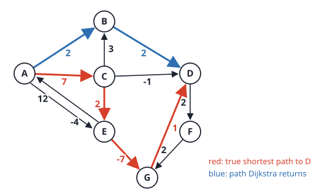
Why it goes wrong. Dijkstra extracts D (distance 4) as soon as it is the smallest tentative distance, and then never revisits it. But the cheaper route reaches D through C (7) and E (9), which look more expensive than 4 at the time, and only the later negative edge E\to G (-7) pays the cost back. A vertex is final only if no later edge can lower its distance, which is true only when all weights are non-negative.
Link. The negative edges C\to D\,(-1) and E\to G\,(-7) are what break the invariant “a finished vertex stays finished”. Bellman-Ford (not in your lectures) relaxes every edge |V|-1 times and handles negative edges, at cost O(|V||E|). Compare AY2425 S1 and AY2324 S1 1(a)(iii), where adding an offset to make weights non-negative is not a valid repair.
AY21/22 S2 2(c) Consider the implementation of the union function for QuickFind below.
public void union(int p, int q) {
if (connected(p, q)) return;
for (int i = 0; i < id.length; i++)
if (id[i] == id[p]) id[i] = id[q];
}Is the above implementation correct? Briefly justify your answer.
Answer
No, it is incorrect. The loop compares each
id[i] with id[p], but id[p]
itself is overwritten during the loop (when i=p it becomes id[q]). The
components that should be merged are the ones whose label equals the
original label of p;
after p’s own entry has changed, the
test id[i] == id[p] compares against the new label, so the
keys with index larger than p that
still carry the old label are not updated.
Counter-example: id=[0,0,1,2]
(objects 0 and 1 are connected, label 0). Run union(0,2),
so id[p]=0 and id[q]=1. At i=0: id[0]==id[0], so
id[0] becomes 1. At i=1:
id[1] is 0 but id[p]=id[0] is now 1, so object
1 is not updated. Result: [1,0,1,2].
Objects 0 and 2 are connected (label 1) but object 1, which was
connected to 0, now has label 0: connected(0,1) is false.
The merge lost a connection (checked by running the code).
(The loop is correct only when every other member of p’s component has a smaller index than p, which is why simple examples can pass.)
Fix: save the label first,
int pid = id[p]; ... if (id[i] == pid) id[i] = id[q];.
Link. This is the aliasing trap: a value that the
loop reads and also writes. The
lecture states the rule as “change all entries whose id equals
id[p] to id[q]”, and id[p] there
means its value before the changes, which is why a
correct implementation copies it first (just as a swap needs a
temporary). Compare AY2425 S2 2(b) for the correct Weighted
QuickUnion.
AY21/22 S1 1(e) (MCQ) The Dijkstra’s algorithm: A. Is to find the possible paths from a single source vertex to all other vertices. B. … from all other vertices to a single destination vertex. C. … from all source vertices to all other vertices. D. Is to find the shortest paths from a single source vertex to a single destination vertex. E. Is to find the shortest paths from a single source vertex to all other vertices. F. Is to find the shortest paths from all other vertices to a single destination vertex.
Answer
E. Dijkstra solves the single-source shortest path problem: shortest paths from one source to all other vertices (non-negative weights). A to C are about “possible paths” rather than shortest ones. D is only a single destination (Dijkstra can stop early, but the algorithm as taught computes all). F is the reverse problem (single destination), which would need the graph reversed.
Link. Running Dijkstra on the reversed graph answers F. Running it from every vertex answers the all-pairs problem, which is why Dijkstra is a building block rather than the end of the story.
AY21/22 S1 1(f) (MCQ) Which statement on the Kruskal’s algorithm is NOT true? A. It only applies to graphs in which all the links are undirected. B. It starts off with partitioning the vertices into |E| equivalence classes, where |E| is the number of edges. C. It processes the edges in increasing order of weight. D. When an edge is added, the two equivalence classes that contain the nodes of the edge are combined. E. It is a greedy algorithm. F. It is to find a Minimum Spanning Tree.
Answer
B. Kruskal starts with |V| equivalence classes (every vertex alone), not |E|, where |V| is the number of vertices. All other statements are true: spanning trees are defined on undirected graphs (A), edges are processed in increasing order (C), an accepted edge merges two classes (D), the algorithm is greedy (E), and it finds an MST (F).
Link. With |V| classes and one merge per accepted edge, exactly |V|-1 merges happen, which is why the algorithm stops as soon as one class remains. The Union-Find structure from the Kruskal lecture is exactly this partition into classes.
AY21/22 S1 2 The adjacency matrix representation of an undirected graph is in Figure Q2, in which the element in (row, column) denotes the edge weight. For example, there is an edge between node A and node B, denoted by (A,B) with a weight of 2; and there is no edge between node A and node E, denoted by (A,E) with a weight of \infty. Starting off with node G, perform Prim’s algorithm with this graph for a Minimum Spanning Tree (MST) in iterations. Show: (a) a solid line of each edge with a number of its weight in the initial graph; (b) to (g) a solid line of each edge in the partial MST and a dashed line connecting a fringe vertex to a tree vertex, after the 1st, 2nd, 3rd, 4th, 5th and 6th iteration.

Answer
(a) Initial graph. Reading the matrix (it is symmetric; the diagonal 0s are not edges): AB\,2, AG\,3, BC\,4, BG\,6, CE\,2, DE\,2, DG\,1, EG\,3. There are no edges AC,AD,AE,BD,BE,CD,CG.
(b) to (g). The tree starts as \{G\} (iteration 1). Each later iteration picks the lightest edge from a tree vertex to a fringe vertex. “Dashed” means every edge between a tree vertex and a vertex outside the tree (a fringe edge); “solid” means a tree edge.
| after iteration | vertex added (edge) | tree edges (solid) | fringe edges (dashed) |
|---|---|---|---|
| 1 | G (start) | none | GD\,1, GA\,3, GE\,3, GB\,6 |
| 2 | D (GD, 1) | GD | DE\,2, GA\,3, GE\,3, GB\,6 |
| 3 | E (DE, 2) | GD, DE | EC\,2, GA\,3, GB\,6 |
| 4 | C (EC, 2) | GD, DE, EC | GA\,3, CB\,4, GB\,6 |
| 5 | A (GA, 3) | GD, DE, EC, GA | AB\,2, CB\,4, GB\,6 |
| 6 | B (AB, 2) | GD, DE, EC, GA, AB | none |
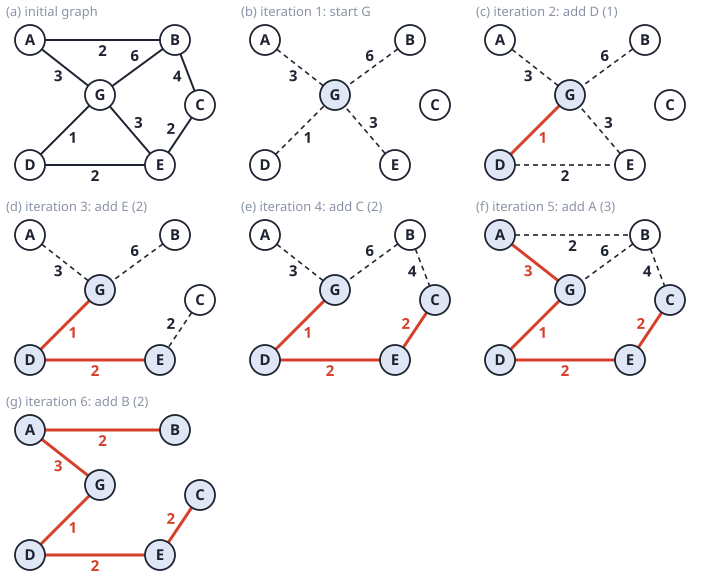
The MST has weight 1+2+2+3+2=10, and it is the same set of edges the circulated solution draws in its parts (b) to (g). A code check (Prim from G with the lightest crossing edge each time) gives exactly this order. Ties: in iteration 3 the edges GA and GE both weigh 3, but DE=2 is smaller, so no tie decides the order; in iteration 5 the candidates are GA\,3 and BC\,4, so A is added before B.
Link. Notice that in iteration 5 the dashed edge to B changes: before A joins, the candidates for B are BC\,4 and BG\,6; after, AB\,2 appears and beats both. That is Prim’s relaxation, “improve the cheapest connection of every fringe vertex whenever the tree grows”. Contrast Dijkstra, which would compare path lengths d(A)+2.
AY20/21 S2 3(b) Execute Prim’s algorithm on the graph in Figure Q3 to obtain a minimum spanning tree starting from node A. Show the contents of arrays S (the status of whether a node has been spanned in the tree), d (the cost of spanning a node) and \pi (the parent node for output purpose) after each iteration of the while loop. Iteration 0 (initialization) is given below. Note: for nodes with equal d values, span with alphabetical order.

Answer
Iteration 0 already has S_A=1 and d_A=0: the start vertex is in the tree, but its neighbours have not been looked at. So each iteration does two things: (1) relax the edges from the vertex added last (set d_v=w(u,v), \pi_v=u when w is smaller than d_v); (2) span the vertex with the smallest d among those outside the tree (ties: alphabetical order) and set its S=1. Arrays are in the order A, B, C, D, E, F.
| iteration | relax from | vertex spanned | S | d | \pi |
|---|---|---|---|---|---|
| 0 | A | 1 0 0 0 0 0 | 0, ∞, ∞, ∞, ∞, ∞ | NULL ×6 | |
| 1 | A: B=4, C=4 | B (tie 4 and 4, alphabetical) | 1 1 0 0 0 0 | 0, 4, 4, ∞, ∞, ∞ | NULL, A, A, NULL, NULL, NULL |
| 2 | B: C=2<4 | C (2) | 1 1 1 0 0 0 | 0, 4, 2, ∞, ∞, ∞ | NULL, A, B, NULL, NULL, NULL |
| 3 | C: D=3, E=2, F=4 | E (2) | 1 1 1 0 1 0 | 0, 4, 2, 3, 2, 4 | NULL, A, B, C, C, C |
| 4 | E: F=3<4 | D (tie D=F=3, alphabetical) | 1 1 1 1 1 0 | 0, 4, 2, 3, 2, 3 | NULL, A, B, C, C, E |
| 5 | D: F=2<3 | F (2) | 1 1 1 1 1 1 | 0, 4, 2, 3, 2, 2 | NULL, A, B, C, C, D |
(The vertex “spanned” in the iteration is the one with S newly set to 1. If you prefer to span first and relax afterwards, the final table is the same.) Final: d=(0,4,2,3,2,2) and \pi=(\text{NULL},A,B,C,C,D), so the MST has the edges AB\,4, BC\,2, CD\,3, CE\,2, DF\,2, total weight 13 (the sum of the d values).
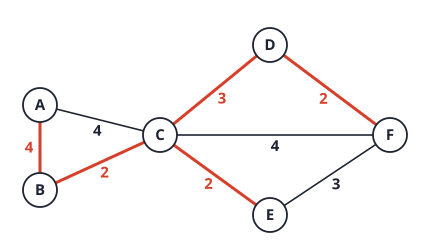
Link. Two ties were broken alphabetically, and one of them mattered: at iteration 1 the edges AB\,4 and AC\,4 tie; spanning B first lets C be reached more cheaply later (BC=2), so the final tree contains AB, not AC. Look also at \pi_F: it was first C (4), then E (3), then D (2), improved twice (Prim’s relaxation).
AY20/21 S2 3(c) Another minimum spanning tree algorithm is called Kruskal’s algorithm. Unlike Prim’s that gradually includes nodes in the tree, Kruskal’s spans the tree by including edges. A possible idea of Kruskal’s algorithm is: 1) Sort all the edges in an increasing order. 2) Take out the smallest edge and include it in the tree. 3) Keep including edges as above until the tree covers all the nodes. Suppose there are V nodes and E edges in an input graph. What is the time complexity of the above algorithm (using big-O notation)? Justify your answer.
Answer
O(E\log E), which is also O(E\log V).
- Step 1, sorting the E edges: O(E\log E).
- Steps 2 and 3: at most E iterations. Each takes O(1): take the next edge, add it, and update a “covered” flag for its two endpoints, keeping a counter of covered nodes, so testing “does the tree cover all the nodes?” costs O(1).
- Total: O(E\log E+E)=O(E\log E). Since E\le V^2, \log E\le2\log V, so O(E\log E)=O(E\log V).
(The correct Kruskal’s algorithm also needs a cycle test per edge, done with Union-Find in almost O(1) amortized, which does not change the total: sorting still dominates.)
Link. Sorting is the bottleneck: O(E\log E) is the same as the cost of building a heap of all edges and extracting the smallest repeatedly, which is how one would stop early once the tree is complete. Prim with a heap gets the same O(E\log V).
AY20/21 S2 3(d) Is the above idea in Question 3(c) correct? Justify your answer with an illustrative example. (Hint: think about the definition of a tree.)
Answer
No. A tree has no cycles and connects all nodes with exactly V-1 edges. The idea never checks for cycles, and it stops as soon as the nodes are covered, not when the edges form a spanning tree. Two failures:
- It can include a cycle. On Figure Q3 the sorted edges are BC\,2, CE\,2, DF\,2, CD\,3, EF\,3, AB\,4, AC\,4, CF\,4. The idea takes BC, CE, DF, CD and then EF, which closes the cycle C-E-F-D-C (weights 2,3,2,3). Then it takes AB\,4, which finally covers all six nodes, and stops. It has 6 edges (a tree on 6 nodes has 5), total weight 2+2+2+3+3+4=16, and contains a cycle, so it is not a tree. The correct Kruskal rejects EF and ends with BC,CE,DF,CD,AB, weight 13.
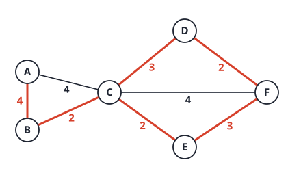
- It can stop with a disconnected graph. Take four nodes with edges AB\,1, CD\,1 and BC\,5. The idea takes AB and CD, which already cover all four nodes, and stops: two separate edges, not a connected tree.
Fix: before including an edge, check that its endpoints are in different components (Union-Find), and stop when V-1 edges have been taken.
Link. “Covers all nodes” and “connected and acyclic” are different conditions. Each failure is one half of the definition of a tree: a cycle breaks the “acyclic” half; a disconnected cover breaks the “connected” half. This is the whole reason the Union-Find structure is part of Kruskal’s algorithm, and why its cost is O(E\log E) for sorting plus a nearly constant cost per edge for the component check.
AY19/20 S1 3(b) Execute Prim’s algorithm on G in Figure Q3 starting at vertex A. Draw the minimum spanning tree obtained.
Answer
Start with A. Each step adds the lightest edge from the tree to a vertex outside it:
| step | tree so far | some of the candidate edges (lightest in bold) | added |
|---|---|---|---|
| 1 | A | AB\,\mathbf2, AG\,3, AF\,7 | AB (2) |
| 2 | A, B | AG\,\mathbf3, AF\,7, BG\,6, BC\,4 | AG (3) |
| 3 | A, B, G | GI\,\mathbf1, GH\,3, BC\,4, AF\,7 | GI (1) |
| 4 | + I | IE\,\mathbf2, GH\,3, IH\,4, IF\,5, BC\,4 | IE (2) |
| 5 | + E | ED\,\mathbf1, GH\,3, IH\,4, IF\,5, EF\,6, BC\,4 | ED (1) |
| 6 | + D | DC\,\mathbf2, GH\,3, DH\,8, IF\,5, BC\,4 | DC (2) |
| 7 | + C | CH\,\mathbf2, GH\,3, IF\,5 | CH (2) |
| 8 | + H | IF\,\mathbf5, AF\,7, EF\,6 | IF (5) |
MST edges (in order): AB,AG,GI,IE,ED,DC,CH,IF, total weight 2+3+1+2+1+2+2+5=18. (This is the order in the circulated solution; the code agrees.)
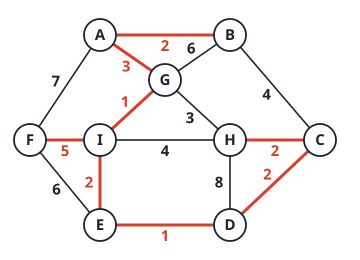
Link. At every step the lightest candidate edge was unique, so no tie had to be broken and the order above is forced. The tree has no cycle: 8 edges join the 9 vertices, and every edge outside it (for example GH=3, BC=4, IH=4) is the heaviest edge of the cycle it would close, which is the MST property.
AY19/20 S1 3(c) Given a directed graph G with non-negative edge weights, Dijkstra’s algorithm is used to compute a shortest path P from a source vertex s to a target vertex t. If the weight of every edge in G is increased by 10, does P remain the shortest path from s to t in the modified graph? If your answer is “yes”, give a proof. Otherwise, give a counterexample.
Answer
No. A path with k edges gets 10k longer, so paths with more edges are penalised more, and the shortest path can change.
Counterexample: edges s\to a (weight 1), a\to t (1) and s\to t (5). The shortest path from s to t is s\to a\to t with length 2 (the direct edge costs 5). After adding 10 to every edge the weights are 11, 11 and 15: the path through a costs 22 and the direct edge costs 15, so the shortest path becomes s\to t. (The paper’s solution uses A\to B 10, B\to C 10, A\to C 25: path 20 before, 35 against 40 after; both examples were checked by running Dijkstra.)
Link. The same fact appears in AY2324 S1 1(a)(iii) (a negative-weight “fix” by adding an offset) and on the links page (Problem 1), where the MST is unchanged by adding a constant. The reason is the same in both: every spanning tree has V-1 edges, so all trees shift by the same amount, but paths between s and t have different numbers of edges.
AY18/19 S2 3(c) Run Dijkstra’s algorithm on the graph in Figure Q3 with negative weights. (i) Display the output “shortest paths” starting from node A. Show the contents of arrays S (the status of whether a node has been confirmed in the shortest path), d (the length of the path) and \pi (the predecessors for output purpose) after each iteration of the while loop. (ii) Which output path(s) are not shortest? Which iteration step(s) cause the wrong answer? (iii) What property of Dijkstra’s algorithm is violated when negative weights are introduced? (iv) Someone proposes a trick to make Dijkstra’s algorithm work with negative weights by shifting every edge weight to a non-negative value, e.g., by adding 3 to every edge, we have C\to E as 0 and E\to D as 1. Will it work? Justify your answer.
Answer
(i) Order A,B,C,D,E; S=1 means confirmed. Each iteration extracts the vertex with the smallest d among the unconfirmed ones and relaxes its out-edges.
| iteration | extract | S (A..E) | d (A..E) | \pi (A..E) |
|---|---|---|---|---|
| 0 | 0 0 0 0 0 | 0, ∞, ∞, ∞, ∞ | - | |
| 1 | A (0) | 1 0 0 0 0 | 0, 5, 1, ∞, ∞ | -, A, A, -, - |
| 2 | C (1) | 1 0 1 0 0 | 0, 5, 1, ∞, -2 | -, A, A, -, C |
| 3 | E (-2) | 1 0 1 0 1 | 0, 5, 1, -4, -2 | -, A, A, E, C |
| 4 | D (-4) | 1 0 1 1 1 | 0, -3, 1, -4, -2 | -, D, A, E, C |
| 5 | B (-3) | 1 1 1 1 1 | 0, -3, 1, -4, -2 | -, D, A, E, C |
Output paths: A\to B: A\to C\to E\to D\to B (-3); A\to C: A\to C (1); A\to D: A\to C\to E\to D (-4); A\to E: A\to C\to E (-2). (The circulated table agrees.)
(ii) The graph has a negative cycle C\to E\to D\to C of weight -3, reachable from A. Going around it lowers any distance by 3 each time, so the true shortest walk distance to B, C, D and E is -\infty: none of the four outputs is a shortest path (there is no shortest path at all). For example A\to C with length 1 is beaten by A\to C\to E\to D\to C with length 1-3-2+2=-2, and by going around again.
The wrong answers are caused at iteration 2, when C is confirmed with d=1 and S_C=1, and at iteration 4, when the relaxation of D\to C (-4+2=-2<1) is skipped because C is already confirmed. Everything computed through C (E, D, B) inherits the error.
(Beyond the lecture: the numbers Dijkstra prints are the shortest simple paths, found by brute force: B=-3, C=1, D=-4, E=-2. The question presumably intends “wrong because of the cycle”.)
(iii) Dijkstra relies on the greedy / “finalised vertex” property: when a vertex is extracted, its tentative distance is already the shortest, because every other path to it passes through a vertex with a larger or equal tentative distance, and adding non-negative edges cannot make it shorter. With a negative edge (or negative cycle), a path through an unconfirmed vertex can later become shorter, so a confirmed vertex may be wrong.
(iv) No, it will not work. Adding 3 to every edge adds 3\times(number of edges) to each path, so paths with more edges are penalised more and the order of path lengths changes. In this graph: original A\to B direct has length 5 and the path A\to C\to E\to D\to B has length -3 (4 edges). After adding 3 the direct edge is 8 and the long path is -3+12=9, so the shifted graph picks the direct edge (checked by code: shifted Dijkstra returns d_B=8 via A). And the negative cycle is still there: its weight becomes -3+9=6>0, so the shift removes the cycle, which changes the problem itself rather than solving it.
Link. This is the same counter-argument as AY2324 S1 1(a)(iii) and AY1920 S1 3(c): a per-edge shift is not a per-path shift. The MST survives such a shift because every spanning tree has the same number of edges; shortest paths do not. Real algorithms for negative weights (Bellman-Ford, not in your lectures) relax all edges V-1 times and can also detect a negative cycle with one more pass.
AY18/19 S1 4(a)(ii) List the shortest path from vertex b to each vertex, obtained by Dijkstra’s algorithm when running on G.
Answer
Source b. All weights are non-negative, so Dijkstra is valid. Extraction order b (0), d (3), c (5), e (5), g (7), f (8), a (9):
| vertex | distance | predecessor | path |
|---|---|---|---|
| a | 9 | c | b → d → c → a |
| b | 0 | none | b |
| c | 5 | d | b → d → c |
| d | 3 | b | b → d |
| e | 5 | d | b → d → e |
| f | 8 | g | b → d → g → f |
| g | 7 | d | b → d → g |
The direct edge b\to e (10) loses to b\to d\to e (3+2=5), and f is cheapest through g (7+1=8) rather than through d directly (3+8=11) or through c (5+5=10). (Checked by code; it agrees with the circulated table.)
Link. The shortest-path tree here (b→d, d→c, d→e, d→g, c→a, g→f) differs from the DFS tree of part (i) (e.g. e\to g in DFS but d\to g in the shortest path tree): DFS follows the first neighbour deep, Dijkstra follows the cheapest.
AY18/19 S1 4(b) Does Prim’s algorithm work if some edges in the input graph have negative weights? If your answer is “yes”, give a proof. Otherwise, give a counterexample.
Answer
Yes. Prim grows a tree T from a start vertex. At every step it adds the lightest edge e leaving T, the edge with the smallest weight among the edges with one end in T and one end outside.
Claim: if T is part of some MST, so is T+e. Proof (cut property, exchange argument). Let M be an MST containing T but not e=(u,v) with u\in T, v\notin T. Adding e to M creates a cycle. This cycle leaves T through e and must come back through another edge f=(x,y) with x\in T, y\notin T. Because e is the lightest edge leaving T, w(e)\le w(f). Then M'=M+e-f is a spanning tree with w(M')\le w(M), so M' is also an MST, and it contains T+e. By induction Prim’s tree is always part of an MST, and at the end it is one. \blacksquare
The proof only compares weights (w(e)\le w(f)); it never adds them or assumes they are non-negative. Equivalently, adding a constant C to every weight makes them all non-negative and does not change which spanning tree is minimal, because every spanning tree has exactly V-1 edges. (Checked by comparing Prim with a brute-force MST search on 300 random graphs with weights from -9 to 9.)
Link. The contrast with Dijkstra (AY2324 S1 1(a)(iii) and (iv)): Prim’s rule is an independent comparison per edge; Dijkstra’s rule adds weights along a path, and a negative edge can make a later path shorter than one already “finished”.
AY18/19 S1 4(c) Given a graph G=(V,E), arbitrarily partition the vertices into two disjoint sets, V_1 and V_2. Let E_1 be all edges with both incident vertices in V_1; let E_2 be all edges with both incident vertices in V_2; let E_3 be all edges with one vertex in V_1 and the other in V_2. Suppose now we construct a Minimum Spanning Tree (MST) M_1 on the subgraph (V_1,E_1) and an MST M_2 on the subgraph (V_2,E_2). We then add in the lowest-weighted edge in E_3 that connects M_1 and M_2. Is this resultant tree an MST of G? Give a proof if your answer is “yes”, or give a counterexample otherwise.
Answer
No. The partition is arbitrary, so M_1 and M_2 have nothing to do with the cheapest way of connecting the two sides, and a single cross edge may force the use of expensive edges inside each side.
Counterexample. Vertices a,b,c,d with V_1=\{a,b\}, V_2=\{c,d\} and edges ab\ 10, cd\ 10, ac\ 1, bd\ 1.
- M_1=\{ab\} (the only spanning tree of V_1), M_2=\{cd\}. The cross edges are ac\,1 and bd\,1; add the lowest, ac. The resulting tree is \{ab,cd,ac\} with weight 10+10+1=21.
- The true MST of G takes the two cheap edges ac and bd and one 10-edge: for example \{ac,bd,ab\} with weight 1+1+10=12.
21 is larger than 12, so the construction is not an MST. (Both weights were confirmed by code.)
Link. The construction would be correct only if the partition were chosen by the cut property (a cut that respects a partial MST). Compare Kruskal, where each accepted edge is the lightest crossing edge of some cut. An arbitrary cut says nothing about the inside of each part. Compare AY2425 S2 2(c): there the light edge between the two sides was forced to be in the MST (it was lighter than everything else crossing), which is exactly the difference.
AY17/18 S1 4(c) In a weighted directed graph H, let P be a shortest path from vertex u to another vertex v. If we increase the weight of each edge in graph H by 1, is it always true that P will still be a shortest path from u to v? If your answer is “yes”, give a proof. Otherwise, give a counterexample.
Answer
No. A path with m edges gets m longer, so paths with more edges are penalised more.
Counterexample: vertices u,a,b,v with edges u\to a\,(1), a\to b\,(1), b\to v\,(1) and u\to v\,(4). The shortest path P is u\to a\to b\to v with length 3 (the direct edge costs 4). After adding 1 to every edge the lengths are 6 for the long path and 5 for the direct edge, so the shortest path is now u\to v. (Checked by running Dijkstra on both graphs.)
Link. The same fact in AY2324 S1 1(a)(iii), AY1920 S1 3(c), AY1819 S2 3(c)(iv): a shift per edge is not a shift per path. The MST survives it, because all spanning trees have the same number of edges.
AY17/18 S1 4(d) For a weighted directed graph with nonnegative edge weights, design an algorithm to find the shortest path from every vertex to a given vertex t in the graph. You may call Dijkstra’s algorithm as a subroutine without writing its pseudocode.
Answer
Reverse the graph and run Dijkstra once from t.
- Build G^R: for every edge u\to v of weight w in G add the edge v\to u of weight w. This costs O(V+E).
- Run Dijkstra from t on G^R. The shortest distance from t to x in G^R equals the shortest distance from x to t in G, because a path t\to\dots\to x in G^R is the same sequence of edges reversed, a path x\to\dots\to t in G with the same total weight.
- The predecessor array of Dijkstra gives, for each x, the next vertex on a shortest path from x to t in G (follow the predecessors in G^R from x back to t and the vertices appear in the order of the path in G).
Total O((V+E)\lg V) with a heap, one run. (The circulated solution runs Dijkstra from every vertex and stops when t is reached; that works but costs V runs, a factor of V more.)
Link. “Single source” and “single destination” are the same problem on the reversed graph. That is also the answer to AY2122 S1 1(e) options B and F.
AY17/18 S1 4(e) In a connected, undirected and weighted graph, if the edge weights are different from each other, is it always true that there is only one unique minimum spanning tree in the graph? If your answer is “yes”, give a proof. Otherwise, give a counterexample.
Answer
Yes. Proof by contradiction. Suppose there are two different MSTs T_1\ne T_2. Both have V-1 edges, so each has an edge that the other lacks. Among all edges in the symmetric difference T_1\triangle T_2 choose the lightest, e (it is unique, since all weights are different). Say e\in T_1\setminus T_2.
- Adding e to T_2 creates a cycle C.
- C cannot lie entirely inside T_1 (a tree has no cycle), so C contains an edge f\notin T_1, hence f\in T_2\setminus T_1, which is in the symmetric difference too.
- e is the lightest edge of the symmetric difference and the weights are distinct, so w(f)>w(e).
- Then T_2'=T_2+e-f is a spanning tree with w(T_2')=w(T_2)+w(e)-w(f)<w(T_2), contradicting that T_2 is minimum.
So there is only one MST. \blacksquare (Checked by brute force on 200 random graphs with distinct weights: exactly one minimum spanning tree each time.)
Link. The converse is false (equal weights may still give a unique MST) but equal weights on one cycle allow several (AY2122 S2 2(a)). This is Tutorial 5 Q3, and it is also why Prim and Kruskal output the same tree when weights are distinct.
AY16/17 S2 4(c) Use Prim’s algorithm to find a minimum spanning tree of the graph in Figure Q4b. Give the order of vertices being included in the tree, starting from vertex A.

Answer
Edges: AB\,5, AD\,6, BC\,1, BD\,3, CD\,4, CE\,6, DE\,2. Start at A; at each step add the lightest edge from the tree to a new vertex (d = cheapest connection, \pi = tree end):
| step | added | d and \pi for B, C, D, E after the step |
|---|---|---|
| 1 | A | B: 5 (A), D: 6 (A) |
| 2 | B (5) | C: 1 (B), D: 3 (B), E: ∞ |
| 3 | C (1) | E: 6 (C) |
| 4 | D (3) | E: 2 (D) |
| 5 | E (2) |
Order of vertices: A, B, C, D, E. MST edges: AB\,5, BC\,1, BD\,3, DE\,2, total weight 11 (this agrees with the circulated table).
Link. Notice that AD=6 and CE=6 (the two edges of weight 6) are both rejected, and the cheapest edge BC=1 was only available after B joined. Prim’s d values are improved twice: D from 6 to 3, E from 6 to 2.
AY16/17 S2 4(d) Give an example to show that Dijkstra’s algorithm may not work correctly for a weighted connected graph, if there is at least one edge with negative weight. Briefly explain your answer.
Answer
Use a directed graph with s\to a (2), s\to b (3) and b\to a (-2). The true shortest distance to a is 3+(-2)=1 (via b). Dijkstra extracts a first (d_a=2<d_b=3), marks it final, and later, when b is extracted and the edge b\to a would give 3-2=1, the update is skipped because a is already final. Dijkstra reports d_a=2, which is wrong (checked by running it).
Why: Dijkstra’s correctness rests on the greedy property “the vertex with the smallest tentative distance is already at its shortest distance”, which holds only if adding edges never makes a path shorter, i.e. all weights are non-negative. (In an undirected graph a negative edge is already a negative cycle, so the question means a directed graph.) The circulated example is A\to B\,1, B\to C\,1, A\to C\,0, A\to D\,99 and D\to B\,{-300}: Dijkstra finalises C with distance 0, but the path A\to D\to B\to C has length 99-300+1=-200.
Link. The same failure as AY1819 S2 3(c) and AY2122 S2 2(b); the “add a constant” repair does not work either (AY2324 S1 1(a)(iii)).
AY16/17 S2 4(e) Give an example of weighted connected graph G=(V,E) and a vertex A in the graph, such that the minimum spanning tree returned by the Prim’s algorithm is different from the shortest-path spanning tree constructed by the Dijkstra’s algorithm. Assume both algorithms start from the vertex A. Briefly explain your answer.
Answer
Take a triangle on A,B,C with AB=2, BC=2 and AC=3.
- Prim from A: the cheapest edge from \{A\} is AB (2); then the cheapest edge leaving \{A,B\} is BC (2), not AC (3). MST =\{AB,BC\}, weight 4.
- Dijkstra from A: d_B=2 via AB; for C the direct edge gives 3 and the path through B gives 2+2=4, so d_C=3 via AC. Shortest-path tree =\{AB,AC\}, weight 5.
The trees differ (BC against AC) and the shortest-path tree is heavier. (Checked by running both algorithms.) The reason is the relaxation: Prim stores the weight of the single edge w(u,v), Dijkstra stores the length of the whole path d(u)+w(u,v).
Link. An MST minimises the total weight of the tree; a shortest-path tree minimises the distance of each vertex from the root separately, and the two goals conflict. This is the example behind the links page (Problem 2).
AY15/16 S2 4(c) In a weighted connected graph H, in which every edge has a positive weight, a spanning tree T is called the minimum product spanning tree if the product of its edge weights is the smallest among all spanning trees of the same graph. Propose a method that uses Prim’s algorithm to find a minimum product spanning tree of graph H. Justify your method. [Hint: use logarithm.]
Answer
Method. Replace every weight w(e)>0 by w'(e)=\ln w(e), run Prim’s algorithm on w' and output the tree (its product is \prod w(e)=\exp\big(\sum w'(e)\big)).
Why it works. For any spanning tree T: \ln\prod_{e\in T}w(e)=\sum_{e\in T}\ln w(e)=\sum_{e\in T}w'(e). Because \ln is strictly increasing, a tree has the smallest product if and only if it has the smallest sum of logs. So the minimum product spanning tree of H is exactly the minimum spanning tree of H with weights w'. The logarithms may be negative (when w<1), which Prim handles, because it only compares weights (see AY1819 S1 4(b)).
A stronger observation. Prim (and Kruskal) use the weights only through their order, and \ln preserves the order. So running Prim on the original weights w gives the same tree: the minimum product spanning tree is the ordinary minimum spanning tree (when the weights are distinct, so the MST is unique). The logarithm is only needed to explain why. This was checked on 200 random graphs: the tree from Kruskal on \ln w and on w were equal, and its product matched a brute-force search over all spanning trees.
Link. The same fact appears on the links page (Problem 1): any monotone transformation of the weights leaves the MST unchanged. The sum of weights is not preserved, but the tree is.
AY15/16 S2 4(d) Suppose a weighted directed graph G=(V,E) is used to represent a communication network. Each edge is associated with a weight that represents the reliability of a communication channel from one vertex to another vertex. For each edge (x,y)\in E, its weight w(x,y) is a real number representing the probability that the channel from vertex x to vertex y will not fail. Thus 0\le w(x,y)\le1. Assume the probabilities are independent of each other. Design an algorithm, using Dijkstra’s algorithm for finding shortest paths in a graph, to find the most reliable path between two vertices in graph G. Briefly explain why your algorithm works correctly.
Answer
The reliability of a path is the product of its edge probabilities (the channels are independent). We want to maximise a product, while Dijkstra minimises a sum.
Algorithm.
- Delete every edge with w=0 (it can never be used; -\ln0=\infty).
- Give each remaining edge the new weight w'(x,y)=-\ln w(x,y). Since 0<w\le1, w'\ge0: non-negative, as Dijkstra requires (a perfectly reliable edge, w=1, gets weight 0).
- Run Dijkstra from the source s with the weights w' and read the path to the target t. Its reliability is e^{-d(t)}.
Why it works. For a path P: \sum_{e\in P}w'(e)=-\sum\ln w(e)=-\ln\prod w(e). Minimising \sum w' is the same as maximising \ln\prod w, and \ln is increasing, so it maximises \prod w, the reliability. Non-negativity of w' is what makes Dijkstra applicable. (Tested against a brute-force search over all simple paths on 300 random directed graphs with probabilities such as 0, 0.3, 0.5, 1: the same reliability every time.)
Link. A product of positive quantities becomes a sum through \log: the same trick turns the minimum product spanning tree of 4(c) into an ordinary MST. Choosing the sign (-\ln) is what turns “maximise” into “minimise”.
AY15/16 S1 4(b) The following is an adjacency-list representation of a weighted undirected graph G: a: (b,32), (c,29), (f,60), (g,51), (h,31); b: (a,32), (h,21); c: (a,29); d: (e,34), (f,18); e: (d,34), (f,40), (g,51), (h,46); f: (a,60), (d,18), (e,40); g: (a,51), (e,51), (h,25); h: (a,31), (b,21), (e,46), (g,25). (i) Draw the graph G according to the above adjacency lists. Give an equivalent adjacency-matrix representation. (ii) Find a minimum spanning tree (MST) of graph G. Calculate the sum of edge weights in the MST.
Answer
(i) The lists are symmetric. The 12 edges: ab\,32, ac\,29, af\,60, ag\,51, ah\,31, bh\,21, de\,34, df\,18, ef\,40, eg\,51, eh\,46, gh\,25 (the graph is drawn below, with the MST in red). Adjacency matrix (symmetric; \infty = no edge; the diagonal is 0):
| a | b | c | d | e | f | g | h | |
|---|---|---|---|---|---|---|---|---|
| a | 0 | 32 | 29 | ∞ | ∞ | 60 | 51 | 31 |
| b | 32 | 0 | ∞ | ∞ | ∞ | ∞ | ∞ | 21 |
| c | 29 | ∞ | 0 | ∞ | ∞ | ∞ | ∞ | ∞ |
| d | ∞ | ∞ | ∞ | 0 | 34 | 18 | ∞ | ∞ |
| e | ∞ | ∞ | ∞ | 34 | 0 | 40 | 51 | 46 |
| f | 60 | ∞ | ∞ | 18 | 40 | 0 | ∞ | ∞ |
| g | 51 | ∞ | ∞ | ∞ | 51 | ∞ | 0 | 25 |
| h | 31 | 21 | ∞ | ∞ | 46 | ∞ | 25 | 0 |
(ii) Kruskal: sort the edges and take each that joins two components: df\,18 (take), bh\,21 (take), gh\,25 (take), ac\,29 (take), ah\,31 (take; joins \{a,c\} with \{b,h,g\}), ab\,32 (skip: a,b already connected), de\,34 (take), ef\,40 (skip: e,f connected through d), eh\,46 (take; joins \{d,e,f\} with the rest), ag\,51, eg\,51, af\,60 (skip).
MST: df,bh,gh,ac,ah,de,eh, total weight 18+21+25+29+31+34+46=\mathbf{204} (7 edges for 8 vertices). The weights in the tree are all distinct (the two 51s are not used), so the MST is unique. Prim from a gives the same tree (checked by code for Kruskal).
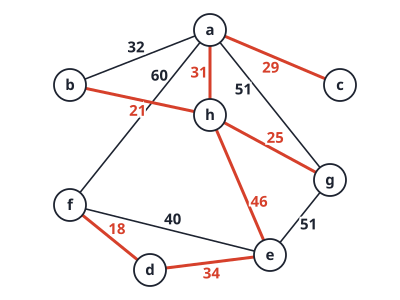
Link. The tree joins two “clusters” (\{a,b,c,g,h\} and \{d,e,f\}) with its heaviest edge eh=46: the lightest edge between the clusters. The edge ef=40 is lighter but joins vertices already connected, so it is rejected: the cycle e,f,d has weights 40, 18, 34 with 40 as its maximum.
AY15/16 S1 4(c) To find the shortest paths from a single source vertex to all other vertices, Dijkstra’s algorithm requires the input to be a weighted, directed graph of which all edge weights are non-negative. In other words, if the input graph contains an edge with a negative weight, Dijkstra’s algorithm may not output the shortest path for every vertex. In the graph in Figure Q4, assign a negative weight to the edge (c,d), such that, starting from the source vertex s, Dijkstra’s algorithm would fail to find the shortest path from vertex s to vertex d. Justify your answer.

Answer
Edges: s\to a\,3, s\to b\,2, a\to d\,2, a\to c\,5, b\to c\,4, c\to d\,?.
Dijkstra from s: extract b (2), giving d_c=6; extract a (3), giving d_d=5 and keeping d_c=6 (via a it would be 8). Now d (5) is the smallest tentative distance, so d is extracted and finalised with d_d=5 before c (6) is processed. Only then is the edge c\to d looked at, and the update 6+w(c,d)<5 is skipped because d is already final.
The true shortest path to d is s\to b\to c\to d with length 2+4+w(c,d)=6+w(c,d). It beats 5 when 6+w(c,d)<5, i.e. w(c,d)<-1. So any weight w(c,d)\le-2 (for integers) makes Dijkstra fail. For example w(c,d)=-2: Dijkstra reports d_d=5 (path s\to a\to d) but the true shortest distance is 2+4-2=4 (path s\to b\to c\to d). (Checked by code: for w=-3 and -2 it fails; for w=-1 the two routes tie at 5, so it still reports 5 correctly.)
Link. The failure needs the negative edge to be discovered after its target is finalised: c is reached late because the route to it is long (6), and d is finalised early (5). A negative edge that is processed before its target is finalised would not break Dijkstra. This is the same mechanism as AY2122 S2 2(b) and AY1819 S2 3(c).
AY15/16 S1 4(d) Suppose that a graph has distinct edge weights. Does the edge with the smallest weight in the graph have to belong to an MST of the graph? Prove that it is true or give a counter example.
Answer
Yes (in fact it belongs to every MST). Let e=(u,v) be the lightest edge, so w(e)<w(f) for every other edge f (the weights are distinct). Let T be an MST that does not contain e. Adding e to T creates a cycle through e, and that cycle contains at least one other edge f\ne e. Then T'=T+e-f is a spanning tree (removing an edge of the cycle keeps it connected and acyclic), and w(T')=w(T)+w(e)-w(f)<w(T), since w(e)<w(f). This contradicts that T is minimum. So every MST contains e. \blacksquare
Alternatively by the cut property: take the cut that separates u from v in a way that e crosses it; e is the lightest edge crossing, hence in the MST. Kruskal confirms it: e is the first edge examined, and the first edge never closes a cycle.
Link. Without distinct weights the lightest edge need not be in a given MST (a triangle with three equal weights: any two of the three edges form an MST, so each edge is missing from one of them). With distinct weights it is in every MST, and the same exchange argument applied to the whole tree gives the uniqueness of the MST (AY1718 S1 4(e)).
Tutorials
Tutorial 5 Q1. Tracing Dijkstra’s algorithm
Apply Dijkstra’s algorithm on the graph represented by the following adjacency matrix A to find the shortest distances and shortest paths from vertex 1 to all other vertices. Show the contents of the array S, as well as the d and pi attributes after each iteration of the while loop.
A = \begin{pmatrix} 0 & 4 & 2 & 6 & 8 \\ \infty & 0 & \infty & 4 & 3 \\ \infty & \infty & 0 & 1 & \infty \\ \infty & 1 & \infty & 0 & 3 \\ \infty & \infty & \infty & \infty & 0 \end{pmatrix}
Answer: the graph
Row i, column j holds the weight of the edge from i to j.

Answer: the trace
After initialization:
| 1 | 2 | 3 | 4 | 5 | |
|---|---|---|---|---|---|
| S | 0 | 0 | 0 | 0 | 0 |
| d | 0 | ∞ | ∞ | ∞ | ∞ |
| pi | null | null | null | null | null |
1st iteration: vertex 1 joins S. Its edges set d = 4, 2, 6, 8.
| 1 | 2 | 3 | 4 | 5 | |
|---|---|---|---|---|---|
| S | 1 | 0 | 0 | 0 | 0 |
| d | 0 | 4 | 2 | 6 | 8 |
| pi | null | 1 | 1 | 1 | 1 |
2nd iteration: vertex 3 (d = 2) joins. Edge 3→4: 2 + 1 = 3 < 6.
| 1 | 2 | 3 | 4 | 5 | |
|---|---|---|---|---|---|
| S | 1 | 0 | 1 | 0 | 0 |
| d | 0 | 4 | 2 | 3 | 8 |
| pi | null | 1 | 1 | 3 | 1 |
3rd iteration: vertex 4 (d = 3) joins. Edge 4→2: 3 + 1 = 4, not smaller than 4. Edge 4→5: 3 + 3 = 6 < 8.
| 1 | 2 | 3 | 4 | 5 | |
|---|---|---|---|---|---|
| S | 1 | 0 | 1 | 1 | 0 |
| d | 0 | 4 | 2 | 3 | 6 |
| pi | null | 1 | 1 | 3 | 4 |
4th iteration: vertex 2 (d = 4) joins. Edge 2→5: 4 + 3 = 7, not smaller than 6. (Edge 2→4 leads to a vertex already in S.)
| 1 | 2 | 3 | 4 | 5 | |
|---|---|---|---|---|---|
| S | 1 | 1 | 1 | 1 | 0 |
| d | 0 | 4 | 2 | 3 | 6 |
| pi | null | 1 | 1 | 3 | 4 |
5th iteration: vertex 5 joins.
| 1 | 2 | 3 | 4 | 5 | |
|---|---|---|---|---|---|
| S | 1 | 1 | 1 | 1 | 1 |
| d | 0 | 4 | 2 | 3 | 6 |
| pi | null | 1 | 1 | 3 | 4 |
Shortest paths (follow pi back to 1): 1 – 2, 1 – 3, 1 – 3 – 4, 1 – 3 – 4 – 5.
General method: trace Dijkstra in a table
- One column per vertex, rows S, d, pi. Start: d = 0 at the source, \infty elsewhere.
- Each iteration: among the vertices with S = 0, pick the smallest d (break ties by the rule the question gives). Set its S = 1.
- For each edge from it to a vertex with S = 0: if d(u) + w < d(v), write the new d and set pi = u. Equal is not smaller: leave it.
- Checks: vertices join S in non-decreasing d; a vertex in S never changes again.
- Read each path backwards through pi.
Extension 1.1. Change the weight of edge 3→4 from 1 to 5, and run Dijkstra from vertex 1 again. Give the final d and pi.
Answer (Extension 1.1)
- Iteration 1: vertex 1. d = (0, 4, 2, 6, 8), pi = (null, 1, 1, 1, 1).
- Iteration 2: vertex 3 (d = 2). 3→4: 2 + 5 = 7, not smaller than 6. No change.
- Iteration 3: vertex 2 (d = 4). 2→4: 8, no. 2→5: 4 + 3 = 7 < 8, so d(5) = 7 and pi(5) = 2.
- Iteration 4: vertex 4 (d = 6). 4→5: 9, no.
- Iteration 5: vertex 5.
| 1 | 2 | 3 | 4 | 5 | |
|---|---|---|---|---|---|
| d | 0 | 4 | 2 | 6 | 7 |
| pi | null | 1 | 1 | 1 | 2 |
Vertex 4 is now reached by the direct edge, and vertex 5 through vertex 2.
Tutorial 5 Q2. Counting shortest paths
Let G = (V, E, W) be a weighted graph, and let s and z be distinct vertices. In the graph, there may be more than one shortest path from s to z. Explain how to modify Dijkstra’s shortest-path algorithm to determine the number of distinct shortest paths from s to z. Assume all edge weights are positive.
Answer
Add a counter v.count: the number of shortest paths from
the source to v found so far.
shortest_paths( Graph g, Node source )
// The array count[] records the number of shortest paths from
// source to each of the vertices
{
for each vertex v {
v.d = infinity;
v.pi = null pointer;
S[v] = 0;
v.count = 0;
}
source.d = 0;
source.count = 1;
put all vertices in queue, Q, in v.d's order;
while not Empty(Q) {
u = ExtractCheapest( Q );
S[u] = 1; /* Add u to S */
for each vertex v adjacent to u
if (S[v] != 1 && v.d > u.d + w[u,v]) {
remove v from Q;
v.d = u.d + w[u,v];
v.pi = u;
// the shortest paths to u extends to v, the
// previously known shortest path(s) to v is replaced
v.count = u.count;
insert v into Q according to its v.d;
}
else if (v.d == u.d + w[u, v]) {
// additional shortest path(s) through u to v is found
v.count += u.count;
}
}
}At the end, z.count is the answer.
- A strictly shorter path through u: every old path to v is no longer shortest. The new shortest
paths are exactly the shortest paths to u, plus the edge. So
v.count = u.count. - An equally short path through u: these are new shortest paths,
added to the old ones. So
v.count += u.count.
Error in the official code: it sets
source.d = 1 after source.d = 0. It must be
source.count = 1. Otherwise every count stays 0, and the
source’s distance is wrong.
General method: extend Dijkstra to compute more than distances
Attach an extra value to each vertex, and update it in the relax step, with two cases:
| Relax result | Distance | Extra value |
|---|---|---|
| d(u) + w < d(v) | replace | replace with a value built from u |
| d(u) + w = d(v) | keep | combine with a value built from u |
- Count of shortest paths: replace with
u.count; combine by adding. - Fewest edges among the shortest paths: replace with
u.edges + 1; combine by taking the minimum.
Why positive weights matter: every vertex before v on a shortest path has a strictly smaller d, so it leaves the queue before v. Its count is final before it is passed on. With a zero-weight edge, u and v can have the same d, and v may leave the queue first and miss u’s paths.
Extension 2.1. A graph has edges s \to a (1), s \to b (1), a \to t (1), b \to t (1) and s \to t (2). Run the counting algorithm from s, breaking ties alphabetically. How many shortest paths reach t?
Answer (Extension 2.1)
| Step | Vertex out | Effect |
|---|---|---|
| 1 | s (d 0, count 1) | a: d 1, count 1. b: d 1, count 1. t: d 2, count 1. |
| 2 | a (d 1) | a \to t: 1 + 1 = 2 = d(t), equal: count(t) = 1 + 1 = 2. |
| 3 | b (d 1) | b \to t: 2 = d(t), equal: count(t) = 2 + 1 = 3. |
| 4 | t | done |
3 shortest paths, each of length 2: s \to t, s \to a \to t, s \to b \to t. The first relax of t used “replace”. The next two used “combine”.
Tutorial 5 Q3. Distinct weights give a unique MST
Show that every connected weighted graph whose edge weights are all different has a unique minimum spanning tree.
Answer
Proof by contradiction. Suppose there exists a connected weighted graph G = (V, E, W) whose edge weights are all different, with two distinct minimum spanning trees T_1 and T_2.
Among all the edges where T_1 and T_2 differ, that is, from the set (T_1 \setminus T_2) \cup (T_2 \setminus T_1), select the edge (p, q) of minimum weight. This edge is unique, because all edge weights are different. Assume, without loss of generality, that (p, q) \in T_1. Now, T_2 must contain some other path from p to q, which is not simply the edge (p, q).
In particular, there must be some edge e along this path in T_2 which does not occur in T_1. If all edges in the path occurred in T_1, then T_1 would contain a cycle (that path plus (p, q)). Notice that T = T_2 \cup \{(p, q)\} \setminus e is a spanning tree: adding (p, q) makes one cycle, and removing e from that cycle breaks it again.
However, from the way we selected (p, q), we know that e must have greater weight than (p, q): e is also a differing edge, and (p, q) is the lightest of them. Thus, T is a spanning tree of smaller weight than T_2. This contradicts the assumption that T_2 is a minimum spanning tree.
General method: the exchange argument for spanning trees
Most MST proofs use the same swap:
- Add an edge e that is not in tree T. This creates exactly one cycle.
- Remove any other edge f of that cycle. The result is again a spanning tree.
- Its weight changes by w(e) - w(f). If that is negative, T was not minimum.
To prove uniqueness, pick the lightest edge where two trees differ, and swap it into the other tree. To prove that an edge is in no MST, show that some swap would remove it and lower the weight.
Extension 3.1. Does a graph whose edge weights are all different always have a unique shortest path between two vertices? Give a proof or a counter-example.
Answer (Extension 3.1)
No. Take edges s–a (1), a–t (2) and s–t (3). All weights differ. Both s \to t and s \to a \to t have length 3.
The MST argument works because two trees can be compared by swapping one edge for one edge. A path length is a sum along a path, and two different sums of distinct numbers can still be equal.
Tutorial 6 Q1. Tracing Prim’s algorithm
Execute Prim’s algorithm for finding a minimum spanning tree on the graph below, starting at vertex G. Show the contents of the array S, as well as the d and pi attributes after each iteration of the while loop.

Concepts: what d means in Prim
In Prim’s algorithm, v.d is the weight of the cheapest single edge from v to the tree so far, and v.\pi is the tree vertex at the other end. The update is v.d = w(u, v), not u.d + w(u, v) as in Dijkstra. Each iteration adds the vertex outside the tree with the smallest d.
Answer
After initialization (the official tables mark G in S from the start):
| A | B | C | D | E | F | G | |
|---|---|---|---|---|---|---|---|
| S | 0 | 0 | 0 | 0 | 0 | 0 | 1 |
| d | ∞ | ∞ | ∞ | ∞ | ∞ | ∞ | 0 |
| pi | null | null | null | null | null | null | null |
1st iteration: G’s edges update A, B, D and E.
| A | B | C | D | E | F | G | |
|---|---|---|---|---|---|---|---|
| S | 0 | 0 | 0 | 0 | 0 | 0 | 1 |
| d | 3 | 6 | ∞ | 1 | 3 | ∞ | 0 |
| pi | G | G | null | G | G | null | null |
2nd iteration: edge GD becomes part of the MST. D’s edges: E gets 2 (better than 3), F gets 5.
| A | B | C | D | E | F | G | |
|---|---|---|---|---|---|---|---|
| S | 0 | 0 | 0 | 1 | 0 | 0 | 1 |
| d | 3 | 6 | ∞ | 1 | 2 | 5 | 0 |
| pi | G | G | null | G | D | D | null |
3rd iteration: edge DE becomes part of the MST. E’s edges: C gets 2.
| A | B | C | D | E | F | G | |
|---|---|---|---|---|---|---|---|
| S | 0 | 0 | 0 | 1 | 1 | 0 | 1 |
| d | 3 | 6 | 2 | 1 | 2 | 5 | 0 |
| pi | G | G | E | G | D | D | null |
4th iteration: edge EC becomes part of the MST. C’s edges: B gets 4 (better than 6).
| A | B | C | D | E | F | G | |
|---|---|---|---|---|---|---|---|
| S | 0 | 0 | 1 | 1 | 1 | 0 | 1 |
| d | 3 | 4 | 2 | 1 | 2 | 5 | 0 |
| pi | G | C | E | G | D | D | null |
5th iteration: edge GA becomes part of the MST. A’s edges: B gets 2 (better than 4). F: 7 is not better than 5.
| A | B | C | D | E | F | G | |
|---|---|---|---|---|---|---|---|
| S | 1 | 0 | 1 | 1 | 1 | 0 | 1 |
| d | 3 | 2 | 2 | 1 | 2 | 5 | 0 |
| pi | G | A | E | G | D | D | null |
6th iteration: edge AB becomes part of the MST.
| A | B | C | D | E | F | G | |
|---|---|---|---|---|---|---|---|
| S | 1 | 1 | 1 | 1 | 1 | 0 | 1 |
| d | 3 | 2 | 2 | 1 | 2 | 5 | 0 |
| pi | G | A | E | G | D | D | null |
7th iteration: edge DF becomes part of the MST.
| A | B | C | D | E | F | G | |
|---|---|---|---|---|---|---|---|
| S | 1 | 1 | 1 | 1 | 1 | 1 | 1 |
| d | 3 | 2 | 2 | 1 | 2 | 5 | 0 |
| pi | G | A | E | G | D | D | null |
The MST edges are GD, DE, EC, GA, AB and DF. The total weight is 1 + 2 + 2 + 3 + 2 + 5 = 15, the sum of the final d values.
General method: trace Prim in a table
It is Dijkstra’s table with one change in the update.
- Pick the vertex with S = 0 and the smallest d. Set S = 1. The edge (\pi, v) joins the tree.
- For each neighbour w with S = 0: if the edge weight w(v, w) is smaller than w.d, set w.d to that weight and w.\pi = v.
- The MST weight is the sum of the final d values.
Extension 1.1. Run Dijkstra’s algorithm from G on the same graph, breaking ties alphabetically. Which edges form the shortest-path tree? Compare its weight with the MST.
Answer (Extension 1.1)
- G: A 3, B 6, D 1, E 3.
- D (1): E: 1 + 2 = 3, not smaller. F: 1 + 5 = 6.
- A (3, before E by the tie rule): B: 3 + 2 = 5 < 6, so \pi(B) = A. F: 10, no.
- E (3): C: 3 + 2 = 5.
- B (5, before C): C: 9, no.
- C (5), then F (6).
The shortest-path tree is GD, GA, GE, AB, EC, DF. Its weight is 1 + 3 + 3 + 2 + 2 + 5 = 16, more than the MST’s 15. Dijkstra uses GE, to make E’s distance from G small. Prim uses DE, the cheapest edge that reaches E.
Tutorial 6 Q2. Tracing Kruskal’s algorithm with weighted QuickUnion
For the same graph as in Problem 1 above, execute Kruskal’s algorithm to find a minimum spanning tree. Use the weighted QuickUnion algorithm shown in lectures for your union-find data structure.
Concepts: weighted QuickUnion
id[v]is the parent of v. A root hasid[r] == r.sz[r]is the size of the tree with root r.union(p, q): find the root i of p and the root j of q. If i = j, do nothing. Ifsz[i] < sz[j], setid[i] = j. Otherwise (a tie included), setid[j] = i. Then add the sizes at the new root.- Only a root gets a new parent. A non-root never changes.
Answer: the official trace
The edges in increasing weight: GD 1; AB 2, DE 2, EC 2; AG 3, GE 3; BC 4; DF 5; BG 6; AF 7.
The official tables, one per edge examined. Only roots carry a size.
| After | Edge | id (A B C D E F G) | Sizes of roots | Result |
|---|---|---|---|---|
| start | A B C D E F G | all 1 | ||
| 1st | GD (1) | A B C D E F D | D 2, others 1 | added |
| 2nd | AB (2) | A A C D E F D | A 2, D 2 | added |
| 3rd | DE (2) | A A C D D F D | A 2, D 3 | added |
| 4th | EC (2) | A A E D D F D | A 2, D 4 | added |
| 5th | AG (3) | G A E D D F D | D 6, F 1 | added |
| 6th | GE (3) | G A E D D F D | D 6, F 1 | rejected: cycle |
| 7th | BC (4) | D D D D D F D | D 6, F 1 | rejected: cycle |
| 8th | DF (5) | G A E D D D D | D 7 | added |
The MST is GD, AB, DE, EC, AG, DF, with weight 1 + 2 + 2 + 2 + 3 + 5 = 15, the same as Prim’s.
Answer: the trace by the lecture code (errors in the official tables)
The official tables do not follow the lecture’s weighted QuickUnion code in three places:
- 4th step (EC): the official sets
id[C] = E. But E is not a root. The roots are C (size 1) and D (size 3), so the code hangs the smaller root under the larger:id[C] = D. - 5th step (AG): the official sets
id[A] = G. The roots are A (size 2) and D (size 4), so the code setsid[A] = D. - 7th step: the official table shows D for every
vertex except F. Nothing was added, so
id[]cannot change. That row lists each vertex’s root (whatfindreturns), not theidarray.
Here is the trace by the lecture code. The union is called with the edge’s endpoints in alphabetical order, so the tie rule (“q’s root goes under p’s root”) matches the official first step.
| Edge | Roots found | Action | id (A B C D E F G) | Sizes of roots |
|---|---|---|---|---|
| DG (1) | D, G: tie | id[G] = D |
A B C D E F D | D 2, others 1 |
| AB (2) | A, B: tie | id[B] = A |
A A C D E F D | A 2, C 1, D 2, E 1, F 1 |
| DE (2) | D (2), E (1) | id[E] = D |
A A C D D F D | A 2, C 1, D 3, F 1 |
| CE (2) | C (1), D (3) | id[C] = D |
A A D D D F D | A 2, D 4, F 1 |
| AG (3) | A (2), D (4) | id[A] = D |
D A D D D F D | D 6, F 1 |
| EG (3) | D, D | reject | D A D D D F D | D 6, F 1 |
| BC (4) | D (B→A→D), D | reject | D A D D D F D | D 6, F 1 |
| DF (5) | D (6), F (1) | id[F] = D |
D A D D D D D | D 7 |
The algorithm stops, because it has |V| - 1
= 6 edges. The tree is the same as in the official answer. Only
the id entries of A and C differ.
General method: trace Kruskal with union-find
- Sort the edges by weight. Fix the order of equal weights (usually alphabetical).
- For each edge (v, w): climb
id[]from v to its root, and from w to its root. - Same root: reject. The edge would close a cycle.
- Different roots: union. Only the roots change. The smaller tree’s root points to the larger tree’s root. On a tie, q’s root goes under p’s root. Add the sizes.
- Stop after |V| - 1 accepted edges.
Extension 2.1. Run the same edge sequence with
plain QuickUnion: union(p, q) sets
id[find(p)] = find(q), with no sizes. What is the deepest
vertex at the end? Compare with the weighted version.
Answer (Extension 2.1)
| Edge | Roots | Action |
|---|---|---|
| DG | D, G | id[D] = G |
| AB | A, B | id[A] = B |
| DE | G, E | id[G] = E |
| CE | C, E | id[C] = E |
| AG | B, E | id[B] = E |
| EG | E, E | reject |
| BC | E, E | reject |
| DF | E, F | id[E] = F |
The final root is F. The path D → G → E → F has depth 3, and so has A → B → E → F. In the weighted version, the deepest vertex is B (B → A → D), at depth 2. Weighting keeps every depth at most \log_2 N = \log_2 7 \approx 2.8.
Tutorial 6 Q3. Detecting a cycle with union-find
Design an algorithm using a union-find data structure to determine whether or not an undirected graph G contains a cycle.
Answer
The algorithm is as follows:
- Start with every vertex in its own component.
- Process every edge (u, v) one by one.
- If u and v are from different components, then
union(u, v). - Otherwise, return TRUE: u and v are already joined by a path, so the edge closes a cycle.
- After all edges are processed, return FALSE.
Complexity: O(|E| \log^* |V|) with weighted QuickUnion and path compression.
General method: union-find for “already connected?” questions
Use union-find when edges arrive one at a time and you must keep asking “are these two already connected?”.
connected(u, v)before you add an edge tells you whether the edge closes a cycle.- Each accepted edge lowers the number of components by exactly one.
- A quick check first: a forest on |V| vertices has at most |V| - 1 edges. So if |E| \ge |V|, the graph has a cycle, with no work at all.
Extension 3.1. Run the algorithm on the graph with vertices 1 to 5 and the edges (1, 2), (3, 4), (2, 3), (4, 1), (4, 5), in that order. When does it stop, and what does it return?
Answer (Extension 3.1)
- (1, 2): different. Union. Components {1, 2}, {3}, {4}, {5}.
- (3, 4): different. Union. {1, 2}, {3, 4}, {5}.
- (2, 3): different. Union. {1, 2, 3, 4}, {5}.
- (4, 1): same component. Return TRUE.
The cycle is 1 – 2 – 3 – 4 – 1. The edge (4, 5) is never examined.
Tutorial 6 Q4. Kruskal with small integer weights
Can we improve the runtime of Kruskal’s algorithm if we know that the edge weights of the input graph G = (V, E, W) are between 1 and |V|? Explain your answer.
Answer
Yes. The time complexity of Kruskal’s algorithm is O(|E| \log |E| + |V| \log^* |V|).
The first term comes from sorting the edge weights with a comparison sort. Since we know they are between 1 and |V|, we can use counting sort instead, in O(|E| + |V|) time.
Thus, the running time of Kruskal’s algorithm becomes O(|E| + |V| + |V| \log^* |V|), which is asymptotically faster.
General method: speed up an algorithm whose bottleneck is a sort
- Write the running time as a sum of steps, and find the largest term.
- If that term is a comparison sort, \Theta(m \log m), look at the keys. Integers in a range 0..k allow counting sort, \Theta(m + k). Keys with d digits in base k allow radix sort, \Theta(d(m + k)).
- Recompute the total. The next largest term now dominates.
Extension 4.1. The edge weights are now integers between 1 and |V|^2. Is counting sort still a good idea? What can you do instead?
Answer (Extension 4.1)
Counting sort would cost O(|E| + |V|^2). For a sparse graph, that is worse than O(|E| \log |E|).
Instead, write each weight w - 1 as a two-digit number in base |V|: w - 1 = a \cdot |V| + b, with 0 \le a, b < |V|. Radix sort with d = 2 and k = |V| sorts the edges in O(2(|E| + |V|)) = O(|E| + |V|). The total stays almost linear.